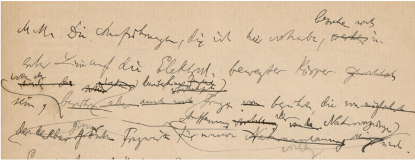
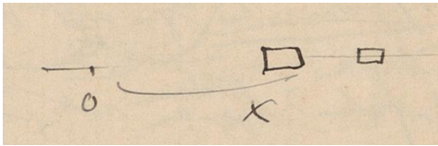
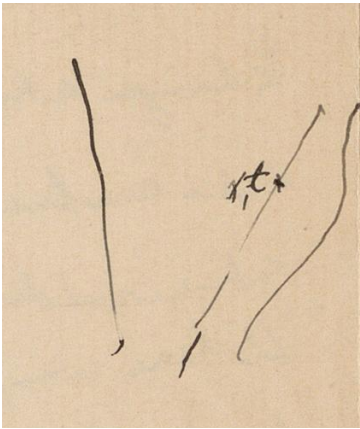
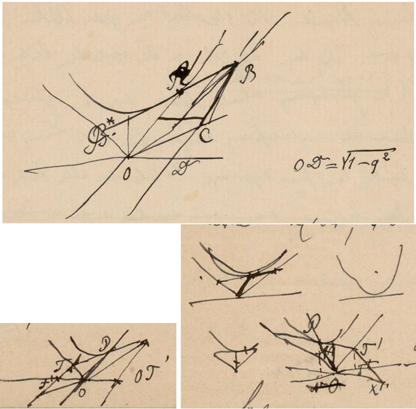
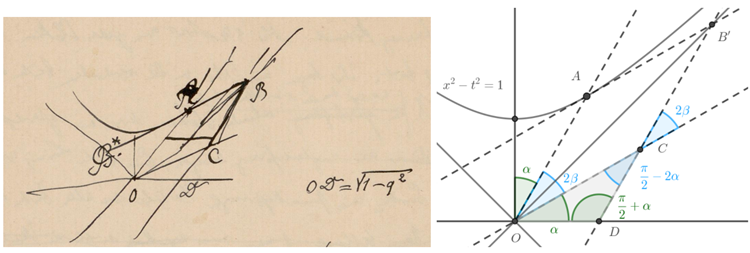
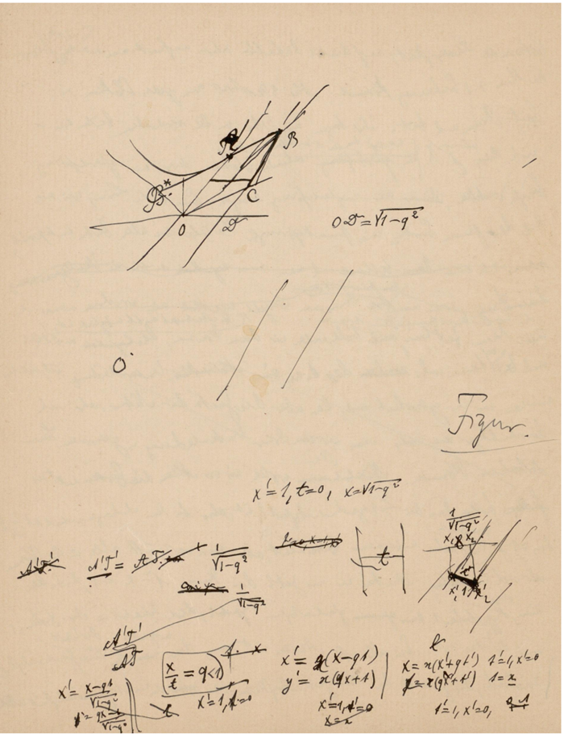
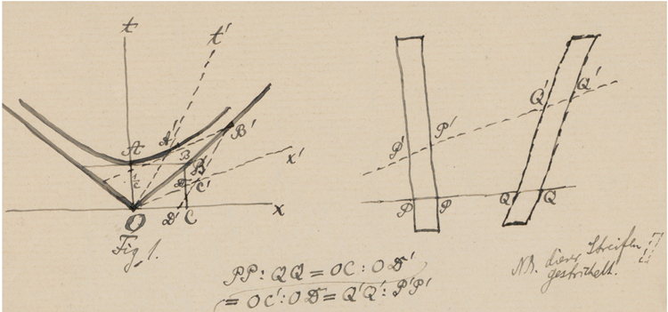
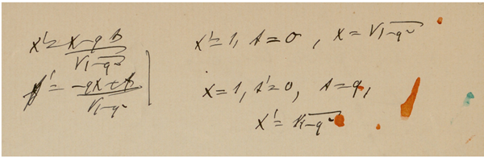
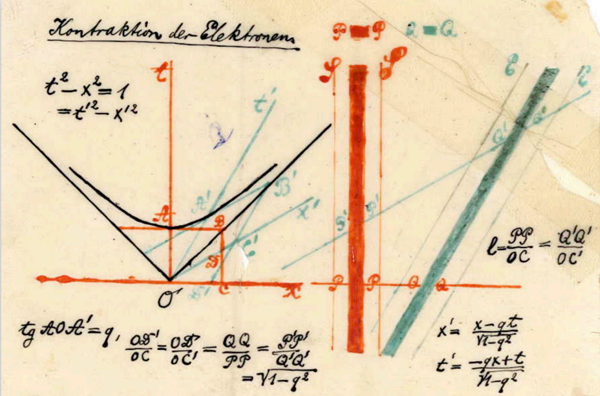

Hermann Minkowski’s original explanation of relativistic length contraction using a space-time diagram and conic section geometry of a standard hyperbola is
reconstructed on the basis of unpublished manuscript notes dated to the spring of
1908. The manuscript notes likely reflect Minkowski’s preparation of a lecture to
physics and mathematics teachers. They reveal Minkowski as an educator as well
as a promoter of a mathematization of the physical sciences. I also comment on his
interpretation of Einstein’s work and on the use of language in his popularization
of mathematics.
ヘルマン・ミンコフスキーが、時空図と標準的な双曲線に関する円錐曲線の幾何学を用いて行った、相対論的な長さの収縮に関する当初の解説について、1908年春の未発表の草稿ノートに基づき再構成を行う。この草稿ノートは、物理学や数学の教師を対象とした講義の準備過程を反映しているものと見られ、ミンコフスキーが物理科学の数学化を推進する人物であると同時に、教育者でもあったことを明らかにしている。また、アインシュタインの業績に対する彼の解釈や、数学の普及活動における言葉の用い方についても論じる。
A few months before his unexpected and untimely death, Hermann Minkowski gave a talk
to the annual gathering of German scientists and physicians in Cologne. The talk was
entitled Space and Time and began with the words
予期せぬ早すぎる死を迎える数ヶ月前、ヘルマン・ミンコフスキーはケルンで開かれたドイツの科学者・医師の年次集会において講演を行った。その講演は「空間と時間」と題され、次のような言葉で始まった。
Gentlemen! The views on space and time which I wish to lay before you
have sprung from the soil of experimental physics. Therein lies their strength.
Their tendency is radical. Henceforth space by itself, and time by itself, are
doomed to fade away into mere shadows, and only a kind of union of the two
will preserve an independent reality. (Minkowski, 1909)
紳士諸君！私が諸君に提示しようとする空間と時間に関する見解は、実験物理学の土壌から生まれたものである。そこにこそ、その見解の強みがある。それらは急進的な性質を帯びている。今後、空間そのものや時間そのものは、単なる影へと消え去る運命にあり、両者が一種の結合をなすものだけが、独立した実在を保つことになるだろう。（ミンコフスキー、1909年）
In this talk, Minkowski introduced the now standard notions of a four-dimensional “world”
whose points are space-time events, he introduced the causal light cone with its distinction
of space-like, time-like and light-like vectors, and created a number of pertinent neologisms
like world-points, world-lines, world-postulate to a wide audience.
この講演においてミンコフスキーは、時空上の事象を点とする4次元の「世界」という、今や標準的となった概念を提示しました。また、空間的・時間的・光的なベクトルを区別する「因果的光円錐」の概念を導入するとともに、「世界点」、「世界線」、「世界公理」といった数々の適切な新語を考案し、それらを広く聴衆に紹介しました。
The opening paragraph of his Cologne lecture has often been cited, and, indeed it gives
a vivid image of a new understanding of space and time emerging from the special theory of relativity. It also promoted the use of sophisticated mathematical notions and methods
for advanced scientific theorizing. In this respect, the entire lecture and its published text
have been called “a magnificent example of scientific agitprop” (Walter, 2010, p. 59).
彼のケルンでの講演の冒頭部分はしばしば引用されてきたが、そこには確かに、特殊相対性理論から生じる時空の新たな理解が鮮やかに描き出されている。また、この講演は、高度な科学的理論構築のために洗練された数学的概念や手法を用いることを促進するものでもあった。こうした点から、講演全体およびその出版されたテキストは、「科学的アジプロ（扇動宣伝）の傑出した例」（Walter, 2010, p. 59）と評されている。
Minkowski’s Cologne Lecture (1908b) with its subsequent publication (Minkowski,
1909) was a carefully crafted text. In this paper, I want to shed some light on the
prehistory of Minkowski’s lecture. In doing so I will follow Minkowski’s own line of
argument and put particular emphasis on his geometric explanation of relativistic length
contraction, and I will refer to a number of unpublished manuscripts which up to now
have not been investigated in any detail, yet.
ミンコフスキーによる1908年のケルンでの講演（およびその後の1909年の出版）は、周到に練り上げられたものであった。本論文では、この講演に至るまでの経緯（前史）に光を当てたい。その際、ミンコフスキー自身の論証の筋道を追い、特に相対論的な長さの収縮に関する幾何学的な説明に重点を置くとともに、これまで詳細な検討がなされてこなかった未公刊の草稿の数々についても言及する。
These manuscripts are probably the place where Minkowski first explored the use
of space-time diagrams for a geometric representation of relativistic space-time features.
Galison (1979, p. 90) suggested that the paper version of the Cologne diagram was “the
first space-time diagram ever drawn”, Walter (2008) more specifically suggests that it was
the first “graphical-illustrative technique” for relativity theory (following a non-space-time
diagram by Poincar´e). In any case, they reveal a creative process and are of interest for
a critical genetic analysis of mathematical texts (Haffner and Bustamente, 2025).
これらの草稿は、ミンコフスキーが相対論的時空の諸性質を幾何学的に表現するために時空図を用いることを初めて試みた場である可能性が高い。ガリソン（Galison, 1979, p. 90）は、ケルン図の紙面上の版こそが「史上初めて描かれた時空図」であったと示唆しており、ワルター（Walter, 2008）はより具体的に、それが相対性理論のための最初の「図解的・例示的手法」であったと述べている（ポアンカレによる時空図ではない図に続くものとして）。いずれにせよ、これらは創造的なプロセスを明らかにするものであり、数学的テクストの批判的発生論的分析（Haffner and Bustamente, 2025）の観点からも興味深い資料である。
Minkowski’s Cologne Lecture came about and was intended as a popularization of a
more specific research project pursued by Minkowski dealing with a sophisticated mathematical treatment of relativistic electrodynamics. Shortly before his explicit reflections on
space and time, Minkowski had completed and published a longer technical paper entitled
The Basic Equations of the Electrodynamics of Moving Bodies (Die Grundgleichungen der
Elekrodynamik bewegter K¨orper ) (Minkowski, 1908a).
ミンコフスキーによるケルンでの講演は、相対論的電気力学の高度な数学的取り扱いを扱った、彼自身のより専門的な研究プロジェクトを一般向けに解説するものとして行われました。空間と時間に関する明示的な考察を展開する直前、ミンコフスキーは『運動する物体の電気力学の基本方程式』（*Die Grundgleichungen der Elektrodynamik bewegter Körper*）（Minkowski, 1908a）と題された、より長編の専門的な論文を完成させ、発表していました。
Minkowski’s contribution to the early development of relativity theory has been the
subject of a number of historical analyses. Early commentaries focussed on a comparison
with Einstein’s work. Pyenson (1977; 1979) analyzed the local context of Minkowski’s
work in G¨ottingen, in particular analyzing a joint seminar on electron theory, conducted
together with Hilbert, Wiechert and Herglotz in 1905 and its syllabus. Galison (1979)
has focussed on the emergence of specific Minkowskian aspects of relativistic space-time.
Corry (1997, 2010) has emphasized the parallels to Hilbert’s ongoing axiomatization
project. Walter has analyzed Minkowski’s work in a number of studies, placing his work
in a larger context of introducing four-dimensional vector methods into physical theory,
commenting on the role of Henri Poincar´e, analyzing Minkowski’s attempt to generalize
Newtonian gravitation theory, and emphasizing the scandal that Euclidean geometry was
no longer to be regarded as sufficient to describe space-time (Walter, 1999a,b, 2007, 2008,
2010, 2018a,b).
相対性理論の初期の発展に対するミンコフスキの貢献については、これまで数多くの歴史的分析が行われてきた。初期の論考では、アインシュタインの研究との比較に焦点が当てられていた。パイエンソン（Pyenson, 1977; 1979）は、ゲッティンゲンにおけるミンコフスキの研究の地域的文脈を分析し、特に1905年にヒルベルト、ヴィーヒェルト、ヘルグロッツと共同で開催した電子論に関するセミナーとそのシラバスについて検討した。ガリソン（Galison, 1979）は、相対論的時空におけるミンコフスキ特有の側面がいかにして現れたかに焦点を当てた。コリー（Corry, 1997, 2010）は、ヒルベルトが進めていた公理化のプロジェクトとの類似性を強調した。ワルター（Walter）は数多くの研究においてミンコフスキの業績を分析し、その研究を物理理論への4次元ベクトル手法の導入というより大きな文脈の中に位置づけたほか、アンリ・ポアンカレの役割への言及、ニュートン重力理論を一般化しようとしたミンコフスキの試みの分析、そして時空を記述する上でユークリッド幾何学がもはや十分とはみなされなくなったという事態が引き起こした衝撃（スキャンダル）の強調などを行っている（Walter, 1999a,b, 2007, 2008, 2010, 2018a,b）。
In late 1907, when Minkowski was working intensely on his paper on the Grundgleichungen
and with his work on relativistic electrodynamics well under way, he also began to think
about propagandizing his results. More specifically, the prehistory of his reflections about
space and time is spanned by the following events.
1907年後半、ミンコフスキーが「基本方程式（Grundgleichungen）」に関する論文の執筆に精力的に取り組み、相対論的電気力学の研究も順調に進めていた頃、彼は自身の研究成果を広く世に広めることについても考え始めました。具体的に言えば、空間と時間に関する彼の考察に至るまでの経緯は、次のような出来事によって構成されています。
He gave a presentation to the G¨ottinger Mathematische Gesellschaft (G¨ottingen Mathematical Society, GMG) on November 5, 1907.1 An abstract of his talk in the Mitteilungen und Nachrichten of the Jahresbericht der Deutschen Mathematiker-Vereinigung
(JDMV-MN) indicates that he introduced an imaginary time coordinate and formulated
the electrodynamic field equations in a four-dimensional, Lorentz covariant manner. The
abstract also mentions that Minkowski discussed applications of the relativity principle to
the theory of gravitation at the end of his presentation. However, this abstract does not
yet contain a hint about the possibility of explaining Lorentz-contraction of electrons by
means of conic section geometry of a hyperbola. Minkowski introduced a four-dimensional
viewpoint, imaginary time, and presumably also matrix notation `a la Cayley, as was done
in the long paper.
彼は1907年11月5日、ゲッティンゲン数学会（GMG）で講演を行った1。『ドイツ数学者協会年報』の「報告と通信」（JDMV-MN）に掲載されたその講演要旨によれば、彼は虚数時間座標を導入し、電磁場の場の方程式を4次元的かつローレンツ共変な形式で定式化した。また同要旨には、ミンコフスキーが講演の最後に、相対性原理の重力理論への適用について論じたことも記されている。しかし、この要旨には、双曲線の円錐曲線幾何学を用いて電子のローレンツ収縮を説明できる可能性を示唆する内容は、まだ含まれていない。ミンコフスキーは4次元的な視点や虚数時間を導入し、おそらくは（後に発表された長編論文と同様に）ケイリー流の行列記法も用いたものと思われる。
1 Apparently, Minkowski had a typescript made of his talk which was produced with several carbon copies. Two versions are preserved in G¨ottingen (Nieders¨achsische Staats- und Universit¨atsbibliothek, Handschriftenabteilung (SUB), Cod. Ms. Math.Arch.60.3), one of them containing corrections
in Minkowski’s hand. Sommerfeld later published this lecture on the basis of these copies, selectively
integrating Minkowski’s handwritten corrections. It appeared posthumously in 1915 in the Annalen
(Minkowski, 1915). This paper was also reprinted a little later in the Jahresbericht der Deutschen
Mathematiker-Vereinigung (Minkowski, 1916).
どうやらミンコフスキーは自身の講演のタイプ原稿を作成させ、その際、数部のカーボンコピーもとっていたようです。ゲッティンゲン（ニーダーザクセン州立・大学図書館［SUB］手稿部、Cod. Ms. Math.Arch.60.3）にはそのうちの2部が保存されており、その一方にはミンコフスキー自身の手による修正が書き込まれています。後にゾンマーフェルトは、これらの写しを基に、ミンコフスキーの手書きの修正を適宜取り入れながら、この講演内容を出版しました。それはミンコフスキーの死後、1915年に『Annalen』（『Annalen der Physik』）誌に掲載されました（Minkowski, 1915）。この論文は、その少し後に『Jahresbericht der Deutschen Mathematiker-Vereinigung』（ドイツ数学会年報）にも再録されています（Minkowski, 1916）。
A second lecture to the GMG followed quickly thereafter, on December 10. This
one was coordinated with a lecture by Felix Klein on quaternions and biquaternions.
Another abstract in the JDMV-MN summarized this talk. It reports that he unified
the electromagnetic field equations into a single biquaternionic equation (“eine einzige
Biquaternionengleichung”). Again, Minkowski appears to have taken pride in the application of advanced and sophisticated mathematical concepts to problems of theoretical
physics. However, even though Minkowski must have been in the midst of writing up the
manuscript of his long article, its published version contains no reference to quaternions
or biquaternions.
その直後の12月10日、GMG（ゲッティンゲン数学会）において2回目の講演が行われた。この講演は、フェリックス・クラインによる四元数および双四元数に関する講演と連携して企画されたものであった。JDMV-MN（ドイツ数学会会報）に掲載された別の要旨が、この講演の内容をまとめている。それによれば、彼は電磁場の諸方程式を単一の双四元数方程式（「eine einzige Biquaternionengleichung」）へと統合したとされる。ここでもまた、ミンコフスキーは、理論物理学の問題に対して高度かつ洗練された数学的概念を適用することに誇りを抱いていたようである。しかしながら、ミンコフスキーは当時、自身の長編論文の原稿を執筆中であったはずであるにもかかわらず、その出版された論文には、四元数や双四元数への言及は一切含まれていない。
Then on 21 December 1907, Minkowski presented his paper to the G¨ottinger Gesellschaft
der Wissenschaften (G¨ottingen Society of Sciences or ‘Academy’ for short) for publication in its Nachrichten. The final manuscript of his paper was delivered to the typesetter
only some time later but the formal presentation of his manuscript to the Academy for
publication gave Minkowski a first occasion for pointing out the relevance of his work to
a broader audience. A manuscript and a typescript of his brief remarks presenting his
paper to his Academy colleagues are preserved in the Archives (Sauer, 2026). In this brief
presentation, Minkowski established a certain historiography of this field of mathematical
physics, placing his own work into a line starting with Hertz’s version of electrodynamic
field equations of 1890, over Lorentz’s electrodynamics, and Einstein’s 1905 work on the
relativity principle. He emphasized that mathematicians had created concepts ahead of
time which were now being employed in understanding modern developments in theoretical physics. The suitability of the mathematical concepts and framework is described
with a reference to Leibniz as ‘preestablished harmony.’ Again, in his presentation to
the Academy there is not yet a hint about the geometric explanation of the Lorentz
contraction.
1907年12月21日、ミンコフスキーは、ゲッティンゲン科学協会（単に「アカデミー」とも呼ばれる）の会報『ナッハリヒテン（Nachrichten）』に掲載するため、自身の論文を同協会に提出した。論文の最終原稿が実際に組版担当者に渡されたのはそれからしばらく後のことであったが、出版に向けてアカデミーに原稿を正式に提示したことは、ミンコフスキーにとって、自身の研究の意義をより広い聴衆に向けて指摘する最初の機会となった。アカデミーの同僚たちに向けて論文を提示した際の短い発言について、その手書き原稿とタイプ原稿がアーカイブに保存されている（Sauer, 2026）。この短い発表の中で、ミンコフスキーはこの数理物理学の分野におけるある種の歴史的系譜を提示し、自身の研究を、ヘルツによる1890年の電気力学的場の方程式に始まり、ローレンツの電気力学、そしてアインシュタインの1905年の相対性原理に関する研究へと続く一連の流れの中に位置づけた。彼は、数学者たちが時代に先駆けて概念を創り出しており、それらの概念が今や理論物理学における現代的な進展を理解するために用いられていることを強調した。そうした数学的概念や枠組みの適合性は、ライプニッツの言葉を借りて「予定調和」として表現されている。なお、このアカデミーでの発表においては、ローレンツ収縮の幾何学的な説明に関する示唆はまだ見られない。
Such was the situation at the end of the year 1907. Minkowski had presented his
manuscript to his Academy colleagues for publication in the Academy’s proceedings. He
was still editing his final manuscript. He was also possibly thinking ahead to follow up
on his first paper by a second technical paper discussing the electrodynamics of moving
media. In early 1908, Minkowski continued working on space and time and relativistic
electrodynamics and for the following, it will be useful to point at some further relevant
developments and events.
1907年末の状況はこのようなものであった。ミンコフスキーは、自身の論文をアカデミーの紀要に掲載すべく、同僚たちに原稿を提出していた。彼は依然として最終原稿の推敲を続けていたほか、最初の論文に続く第二の専門的論文として、運動する媒質の電気力学を論じる論文の構想も練っていた可能性がある。1908年に入っても、ミンコフスキーは空間・時間および相対論的電気力学に関する研究を継続した。これに関連して、その後のいくつかの進展や出来事に触れておくことは有益であろう。
Minkowski knew about and cited Einstein’s famous paper from 1905 on the Electrodynamics of Moving Bodies (Einstein, 1905), which introduced the special theory of
relativity. The paper had appeared too late to be included in the syllabus of the joint
seminar on electron theory which Minkowski had conducted together with David Hilbert,
Emil Wiechert and Gustav Herglotz in 1905 (Pyenson, 1979). But on October 7, 1907,
Minkowski had written to Einstein, asking him for offprints of this paper (Klein et al.,
1993, Doc. 62). In the meantime, Einstein himself had been working on a long review of
his theory of (special) relativity (Einstein, 1907). His own review had been received by
Johannes Stark, editor of the Jahrbuch f¨ur Radioaktivit¨at und Elektronik, on December 4,
1907, and the published paper had come out on January 22, 1908 (Stachel, 1989, p. 485).
We don’t know when Minkowski learned about Einstein’s Jahrbuch review, but we may
surely assume that Minkowski would have studied Einstein’s review as soon as he could
get a hold of it.
ミンコフスキーは、特殊相対性理論を導入したアインシュタインの1905年の有名な論文『動いている物体の電気力学』（Einstein, 1905）について知っており、これを引用していた。この論文は、ミンコフスキーがダフィット・ヒルベルト、エミール・ヴィーヒェルト、グスタフ・ヘルグロッツと共同で1905年に行った電子論に関する合同ゼミナールのシラバスに盛り込むには、発表の時期が遅すぎた（Pyenson, 1979）。しかし、1907年10月7日、ミンコフスキーはアインシュタインに手紙を書き、この論文の別刷りを送るよう依頼している（Klein et al., 1993, Doc. 62）。その間、アインシュタイン自身も、（特殊）相対性理論に関する長編の総説論文の執筆に取り組んでいた（Einstein, 1907）。彼自身のこの総説論文は、1907年12月4日に『放射能・電子工学年報（Jahrbuch für Radioaktivität und Elektronik）』の編集者ヨハネス・シュタルクのもとに受理され、1908年1月22日に出版された（Stachel, 1989, p. 485）。ミンコフスキーがアインシュタインの『年報』掲載の総説論文についていつ知ったのかは定かではないが、彼はその論文を入手できるとすぐに目を通したであろうと、確信を持って推測できる。
Another paper, that Minkowski would have studied is Max Planck’s On the Dynamics
of Moving Systems (Planck, 1907). Planck had already published it in the Proceedings
of the Berlin Academy in 1907. But on March 6, 1908, Planck also submitted his same
paper to be reprinted in the Annalen der Physik (Planck, 1908).
ミンコフスキーが研究したであろうもう一つの論文に、マックス・プランクの『運動する系の力学について』（Planck, 1907）がある。プランクはこの論文をすでに1907年にベルリン・アカデミーの紀要で発表していたが、1908年3月6日には、同じ論文を『アナーレン・デア・フィジーク』誌に再録するために提出してもいる（Planck, 1908）。
On February 21, Minkowski delivered the final manuscript of the Grundgleichungen to
the printer (Walter, 2007, p. 219). Then, on April 5, the G¨ottingen Academy’s Nachrichten
containing his Grundgleichungen paper was issued.2 A few days later, Minkowski travelled
to Rome to participate in the IVth International Congress of Mathematicians.
2月21日、ミンコフスキーは『基本方程式（Grundgleichungen）』の最終原稿を印刷所に引き渡した（Walter, 2007, p. 219）。次いで4月5日、彼の『基本方程式』に関する論文を掲載したゲッティンゲン学術協会の『会報（Nachrichten）』が発行された。2 その数日後、ミンコフスキーは第4回国際数学者会議に出席するため、ローマへと向かった。
2 See the page following p. 128 in the relevant year volume of the Nachrichten.
当該年度の『Nachrichten』の128ページに続くページを参照してください。
Sometime between the becoming available of Einstein’s Jahrbuch paper and the publication of Minkowski’s Grundgleichungen paper, i.e. between January 22 and April 5,
Minkowski wrote a manuscript, in which he explained, for the first time, the Lorentz
contraction using a space-time diagram.3 An approximate date for that manuscript can
be gathered by two remarks. On f51/M2, Minkowski wrote:
アインシュタインの『年報（Jahrbuch）』論文が利用可能になってからミンコフスキーの『基本方程式（Grundgleichungen）』論文が出版されるまでの間、すなわち1月22日から4月5日までのどこかの時点で、ミンコフスキーはある草稿を執筆した。その中で彼は、時空図を用いてローレンツ収縮を初めて説明している。3 この草稿のおおよその時期は、二つの記述から推測できる。f51/M2において、ミンコフスキーは次のように記している。
3 SUB, Doc. Ms. Math. Arch. 60.4, f50–65. The pages are sequentially numbered by Minkowski in the
upper right corner with simple numbers for pages 1 through 10, and with numbers enclosed by dashes (-
nn- ) for pages 11 through 16. In citing from these manuscript pages, I will use a dual reference fxx/Myy,
indicating both the folio number xx, found as pencil notes in the right margin of the recto pages, and
(when it exists) the page numbering yy that Minkowski himself put in the right top corner.
SUB, Doc. Ms. Math. Arch. 60.4, f50–65。これらのページには、ミンコフスキーによって右上に通し番号が振られている。1ページから10ページまでは単純な数字が、11ページから16ページまではダッシュ（-nn-）で囲まれた数字が用いられている。本稿でこれらの原稿ページを引用する際は、「fxx/Myy」という二重の参照表記を用いる。ここで「xx」は、各ページの表面（recto）の右余白に鉛筆で記されたフォリオ番号（葉番号）を指し、「yy」は（存在する場合）ミンコフスキー自身が右上に記入したページ番号を指す。
As Einstein continues to work on his chosen path, he recently published a
long paper in Stark’s Jahrbuch der Radioaktivit¨at und Elektronik: “On the
Relativity Principle and the Conclusions Drawn from It”, in which he now
strives for a further extension of his methods.4
アインシュタインは自ら選んだ道を歩み続け、最近、シュタルクが編集する『放射能および電子工学年報（Jahrbuch der Radioaktivität und Elektronik）』に、「相対性原理とそれから導かれる結論」と題する長編論文を発表した。この論文において、彼は自身の手法のさらなる拡張を試みている。4
4 “Indem Einstein in seiner eingeschlagenen Bahn weiter arbeitet, es ist j¨ungst von ihm in dem
Starkschen Jahrbuch der Radioaktivit¨at und Elektronik ein l¨angeres Referat erschienen: Ueber das Relat.
und die aus demselben gezogenen Folgerungen, in dem er nun eine weitere Ausdehnung seiner Methoden
anstrebt.” The reference is to (Einstein, 1907).
アインシュタインが自ら選んだ道を歩み続ける中、最近、『シュタルク放射能・電子工学年報』に、彼による長めの論文『相対性について（On the Relat.）』およびそこから導き出された結論が掲載された。この論文において、彼は自身の手法のさらなる拡張を試みている。ここで言及されているのは (Einstein, 1907) である。
This reference clearly establishes the publication of Einstein’s (1907) paper, January 22,
1908, as a terminus post quem, and on f54/M5, Minkowski wrote:
この文献は、アインシュタインの1907年の論文の出版日である1908年1月22日を、ある事象がそれ以降に起こったことを示す「terminus post quem（それ以降という起点）」として明確に定めており、ミンコフスキーはf54/M5において次のように記している。
In a longer paper, which will appear in the G¨ottinger Nachrichten these days,
I show in particular how this principle of relativity leads to decisive results
about electrodynamics of moving bodies.5
近々『ゲッティンゲン報知（Göttinger Nachrichten）』に掲載されるより詳細な論文において、私は特に、この相対性原理が運動する物体の電気力学に関して決定的な結果をいかに導き出すかを示している。5
5“In einer l¨angeren Arbeit, die in diesen Tagen in den G¨ott. Nachr. erscheint, insbesondere zeige ich,
wie dieses Relativit¨atsprinzip insbesondere zu entscheidenden Ergebnissen ¨uber Elektrodynamik bewegter
K¨orper f¨uhrt.”
【英訳の原語】
This reference puts his manuscript close to the issuing of his own paper on April 5 as a
terminus ante quem. Also at the end of the manuscript, he has
この参照により、彼の原稿は、彼自身の論文が4月5日に発表された時点に近い位置づけとなる。
また、原稿の末尾には、
For bodies at rest there is agreement, for moving bodies there is disagreement.
I now believe that my work, which will be published in the next few days, will
bring a definitive decision. The principle of relativity, as I show in it, leads to
very specific equations that also deviate from Lorentz’s equations.6
静止している物体については意見の一致が見られますが、運動している物体については意見が分かれています。
私は今、数日中に発表される私の研究が、この問題に決定的な結論をもたらすと確信しています。その中で私が示しているように、相対性原理は、ローレンツの方程式とも異なる、極めて具体的な方程式を導き出すのです。6
6“F¨ur ruhende K¨orper herrscht Ubereinstimmung, f¨ur bewegte Meinungsverschiedenheiten. Ich glaube ¨
nun, dass meine Arbeit, die in diesen Tagen erscheint, definitive Entscheidung bringt. Das Relativit¨atsprinzip, wie ich darin zeige, f¨uhrt auf ganz bestimmte Gleichungen, die auch von den Lorentzschen
abweichen.” (f65/M16)
【英訳の原語】
This manuscript, I contend, gives the first derivation of Lorentz contraction by a
geometric argument using conic section geometry of a hyperbola. It also documents the
evolution of Minkowski’s space-time diagrams.
本稿は、双曲線の幾何学的性質（円錐曲線論）を用いた幾何学的な議論によって、ローレンツ収縮を初めて導出したものであると私は主張する。また、本稿はミンコフスキーの時空図の発展の過程についても記述している。
The manuscript clearly was written as notes for a presentation. It begins with the
usual abbreviation “M.H.” for “Meine Herren” or “Gentlemen” and continues like this
(see Fig. 1):
その原稿は、明らかにプレゼンテーション用のメモとして書かれたものでした。冒頭には、「Meine Herren」（紳士諸君）を意味するお決まりの略語「M.H.」が記されており、以下のように続いています（図1を参照）。
M.H. The remarks I intend to make here are primarily concerned with the
electrodynamics of moving bodies, but I also want to touch on questions that
are of great importance for our understanding of natural processes in general.7
M.H. ここで私が述べようとしていることは、主として運動する物体の電気力学に関するものですが、自然現象一般を理解する上で極めて重要な問題にも触れておきたいと思います。7
7 A more diplomatic transcription of the first sentence would be:
“M.H. Die Ausf¨uhrungen, die ich hier vorhabe, werden ⌊beziehen sich⌋ in erster Linie auf die Elektrod.
bewegter K¨orper gerichtet sein, ber¨uhren aber ⌊werden dar ⌊wollen aber sollen werden dar¨uberhinaus
zugleich ¨uberhaupt⌋⌋ auch noch Fragen von ber¨uhren, die von m¨oglichst der denkbar gr¨ossten ⌊grosser⌋
Tragweite f¨ur unsere Naturanschauung ⌊Auffassung Vorstellung von den ⌊der⌋ Naturvorg¨ange⌋ ⌊wichtig⌋
sein sind.” (f50/M01)
In all quotes from the manuscripts I give what I take to be the intended final version without indicating
deletions or interlineations, unless they are particularly significant or interesting.
最初の文を、より「外交的（ディプロマティック）」な形で書き起こすと、次のようになるだろう。
「M.H. ここで私が述べようとする説明は、主として運動体の電極に関するものであるが、自然の理解にとって極めて重要な意味を持つ『接触』の問題にも触れることになるだろう。」(f50/M01)
原稿からの引用にあたっては、削除や行間への書き込みが特に重要あるいは興味深い場合を除き、筆者が意図した最終的な版であると判断されるものを提示する。

Figure 1: The beginning of Minkowski’s manuscript from late March / early April 1908
(SUB Cod. Ms. Math. Arch. 60.4, f50, M1).
図1：ミンコフスキーの原稿の冒頭部分（1908年3月下旬～4月上旬）
（SUB Cod. Ms. Math. Arch. 60.4, f50, M1）
There is no hint in the manuscript as to what the occasion or audience of this talk would
have been. The printed titles and abstracts of talks presented to the GMG do not contain
any indication of this talk or of any talk by Minkowski in the relevant time period. It
might have been presented at an adhoc meeting of the GMG, or at some other gathering
of G¨ottingen mathematicians. Very likely it may, however, be a first draft for a lecture
he gave at a Ferienkurs (vacation course).8 Such courses were announced to take place in
G¨ottingen from 21 April to 2 May, see JDMV-MN (1908, pp.11–12). They were intended
for secondary school teachers (“Lehrer h¨oherer Schulen”) and the program included a
number of lectures on mathematics and physics as well as visits and demonstrations of
various places like the mathematics library (“Mathematisches Lesezimmer”), the collection of mathematical models, the observatory, and various physics laboratories. In the
program, Minkowski was announced to give a two-part lecture (“2 Doppelst.”) on “Recent
Ideas on the Fundamental Laws of Mechanics” (“Neuere Ideen ¨uber die Grundgesetze der
Mechanik.”). The Minkowski papers also contain a manuscript for that lecture.9 They
indicate a date of 24 and 25 April (f66) and are also clearly addressed to physics teachers.10 In any case, between these two manuscripts, Minkowski travelled to Rome for the
International Congress of Mathematicians, where he met, among others, H.A. Lorentz and
H. Poincar´e.11
この講演がどのような機会に行われたものか、あるいは聴衆が誰であったかを示す手がかりは、原稿には含まれていない。GMG（ゲッティンゲン数学会）で発表された講演の印刷されたタイトルや要旨の中にも、この講演や、該当する時期に行われたミンコフスキーによる他の講演に関する記載は見当たらない。GMGの臨時会合、あるいはゲッティンゲンの数学者たちの別の集まりで発表された可能性もある。しかし、最も可能性が高いのは、彼が「Ferienkurs（休暇中講習会）」で行った講義の草稿であるということだ。8 こうした講習会は、4月21日から5月2日にかけてゲッティンゲンで開催されることが告知されていた（JDMV-MN (1908, pp.11–12) 参照）。これらは中等学校の教師（「Lehrer höherer Schulen」）を対象としたもので、プログラムには数学や物理学に関する多数の講義に加え、数学図書室（「Mathematisches Lesezimmer」）、数学模型コレクション、天文台、各種物理学実験室といった施設への見学や実演も盛り込まれていた。プログラムにおいて、ミンコフスキーは「力学の基本法則に関する最近の考え方（Neuere Ideen über die Grundgesetze der Mechanik）」と題する2回構成の講義（「2 Doppelst.」：2コマ分の講義）を行うことになっていた。ミンコフスキーの資料群には、その講義の原稿も含まれている。9 そこには4月24日および25日という日付が記されており（f66）、物理学の教師に向けたものであることも明らかである。10 いずれにせよ、これら2つの原稿を作成する間の時期に、ミンコフスキーは国際数学者会議に出席するためにローマへ赴き、そこでH.A.ローレンツやH.ポアンカレらと会っている。11
8 Pyenson (1977, p. 72) citing a passage about Einstein from p.(3) of the manuscript claims, without
further justification, that it was “during a series of lectures on the electrodynamics of moving bodies
delivered before an audience of physicists in the spring of 1908”. Walter (1999a, p. 47) also suggested
that the pages around f52 were notes for these Ferienkurse. However, what I take to be the actual notes
for these Ferienkurse are conjectured by him to be first drafts of the Cologne lecture (Walter, 1999a,
p. 49).
Pyenson (1977, p. 72) は、当該草稿の3ページ目にあるアインシュタインに関する記述を引用し、それ以上の根拠を示すことなく、その記述が「1908年春、物理学者を聴衆として行われた『運動物体の電気力学』に関する一連の講義」の際のものであると主張している。Walter (1999a, p. 47) もまた、f52（フォリオ52）前後のページが、これら「フェリエンクルス（休暇中講習会）」のためのメモであったと示唆した。しかし、筆者がこれら「フェリエンクルス」のための実際のメモであると見なしているものについて、Walter はケルンでの講義の初稿であると推測している (Walter, 1999a, p. 49)。
9 That second manuscript, as found in the archival folder SUB Cod.Ms. Math.Arch. 60.4, begins right
after the end of the other manuscript. However, its subsequent pages are dispersed over two folders (60.4
and 60.2) and are no longer preserved in their original sequence. My reconstruction of this manuscript is
the following: First part: 60.4: f1, 60.2: f1–f6, 60.4: f7, f67–f68; these pages are numbered consecutively
from 1 to 10 by Minkowski. After 60.4, f68 (p. 10) there are several blank sheets, and I have not been
able to locate any page that would follow after this one. Second part: 60.4: f19–f20, 60.2: f7–f8, 60.4: f6,
f21–f23, f75–f76, f18; again these pages are numbered consecutively from 1 to 12, however, p. 3 is missing
and could not be located.
アーカイブ・フォルダ「SUB Cod.Ms. Math.Arch. 60.4」に収められている2つ目の原稿は、もう一方の原稿の末尾に続く箇所から始まっています。しかし、それに続くページは2つのフォルダ（60.4および60.2）に分散しており、本来の順序では保存されていません。私が復元したこの原稿の構成は以下の通りです。第1部：60.4: f1、60.2: f1–f6、60.4: f7、f67–f68。これらのページには、ミンコフスキーによって1から10までの通し番号が振られています。60.4のf68（10ページ）の後には数枚の白紙があり、このページに続くべきページは見つかっていません。第2部：60.4: f19–f20、60.2: f7–f8、60.4: f6、f21–f23、f75–f76、f18。これらも同様に1から12までの通し番号が振られていますが、3ページ目が欠落しており、発見できませんでした。
10 Minkowski also mentioned those vacation courses in a letter to Hurwitz, dated 10 May, 1908: “auch
hatte ich noch einen Ferienkurs abzuhalten.” SUB Cod. Ms. Math.Arch.78:212. In later notes for his
lecture to the GMG of July 28, 1908, he appears to refer to the Ferienkurs lecture as a lecture at the
“Physical Society” (Physikalische Gesellschaft”) Math.Arch.60.4, f27, f39.
ミンコフスキーは、1908 年 5 月 10 日付けのハーヴィッツへの手紙でも、これらの休暇コースについて言及しました。
ハッテ・イヒ・ノッホ・アイネン・フェリエンクルス・アブ・ハルテン。」 SUB Cod. Ms. Math.Arch.78:212。1908 年 7 月 28 日の GMG での講演の後のメモの中で、彼はフェリエンクールの講演を「物理学会」 (Physikalische Gesellschaft) での講演として言及しているようです。
11The Congress took place from 6–11 April 1908; see (Kox, 2008, p. 238) and p. 263 for Lorentz on
Minkowski’s death. The meeting between Lorentz and Minkowski is mentioned in Math.Arch.60.4, f11,
see also (Walter, 1999a, p. 67), who establishes that Minkowski and Lorentz met at the occasion.
この会議は1908年4月6日から11日にかけて開催された。ミンコフスキーの死に関するローレンツの記述については、(Kox, 2008) の238ページおよび263ページを参照のこと。ローレンツとミンコフスキーの会見については Math.Arch.60.4, f11 に言及があり、両者がこの機会に会ったことは (Walter, 1999a, p. 67) でも確認されている。
Regardless of whether the first manuscript records notes for a talk of its own or was a
first draft for the Ferienkurs lecture, it seems likely that Minkowski, studying Einstein’s
Jahrbuch paper, was realizing the possibility of a purely geometric explanation of relativistic length contraction. There are indications that Minkowski himself might have been
rather excited about his new insight. He wrote:
その最初の草稿が、それ自体ある講演のためのメモを記したものであったか、あるいは「フェリエンクルス（夏季講習）」での講義に向けた初稿であったかにかかわらず、ミンコフスキーはアインシュタインの『年報（Jahrbuch）』論文を検討する中で、相対論的な長さの収縮を純粋に幾何学的に説明できる可能性に気づきつつあったと考えられます。ミンコフスキー自身、この新たな洞察にかなり興奮していたことをうかがわせる兆候があります。彼は次のように記しています。
To state my own opinion right away, I contend that Lorentz’s hypothesis,
correctly understood, represents a law of nature of the very first rank, I would
even like to call it the first of all laws of nature; this because it concerns the
most basic concepts of all our knowledge about nature, our conception of space
and time, and also because of quite extraordinary consequences of this law,
the most astonishing of which have not even been discovered yet.12
まず私自身の見解を述べれば、ローレンツの仮説は、正しく理解されるならば、極めて重要な自然法則――いや、あらゆる自然法則の筆頭とさえ呼ぶべきもの――であると私は主張します。なぜなら、この仮説は自然に関する我々のあらゆる知識の最も根本的な概念、すなわち空間と時間についての我々の認識に関わるものであり、また、この法則が極めて並外れた帰結をもたらすものであって、その中でも最も驚くべきものは未だ発見されてさえいないからです。12
12“N¨amlich gleich meine eigene Meinung zu sagen, so bedeutet jene Lorentzsche Hypothese richtig
aufgefasst, ein Naturgesetz allerersten Ranges, ich m¨ochte sogar geradezu sagen, das erste aller Naturgesetze, n¨amlich einerseits deshalb, weil es sich um die urspr¨unglichsten Begriffe aller Naturerkenntnis, um
die Auffassung von Raum und Zeit handelt, dann wegen ganz ausserordentlicher Konsequenzen dieses
Gesetzes, von denen die ¨uberraschendsten bisher noch gar nicht bemerkt worden sind.” (f52/M3)
【英訳の原語】
If this was indeed the first time that Minkowski presented—or intended to present—to a
public audience his geometric derivation of Lorentz contraction, it will be worthwhile to
analyze this derivation in somewhat more detail. I want to emphasize in the following,
going along Minkowski’s notes, that this crucial insight actually depends on a number of
assumptions and abstractions that are involved in the argument, and I will analyze the
argument in some detail.
もしミンコフスキーがローレンツ収縮の幾何学的導出を一般の聴衆に対して提示した（あるいは提示しようと意図した）のが実際に今回が初めてであったとするならば、その導出をもう少し詳細に分析する価値があるだろう。以下では、ミンコフスキーのノートに沿って、この極めて重要な洞察が実際には議論に含まれるいくつかの仮定や抽象化に依存していることを強調しつつ、その議論を詳細に分析したいと思う。
The first step is to recognize a significant problem that
offers itself to treatment by sophisticated mathematical methods. Minkowski begins his
presentation with a discussion of Lorentz’s hypothesis that moving bodies appear contracted in the direction of motion if viewed by an observer at rest. He mentions Einstein’s
work on the relativity principle as a continuation of Lorentz’s work. The relativity principle, in particularly, emphasizes that the surprising contraction hypothesis does not depend
on a distinction between a special system at rest and a moving system. Rather the same effect is valid whatever system is taken to be at rest, and any uniformly moving system
can be taken as a rest system.
第一歩は、高度な数学的手法を用いて取り組むことのできる重要な問題を見出すことである。ミンコフスキーは、静止している観測者から見ると運動する物体は運動方向に収縮して見えるというローレンツの仮説に関する議論から話を始める。彼は、アインシュタインによる相対性原理の研究を、ローレンツの研究の延長線上にあるものとして挙げている。特に相対性原理が強調するのは、この驚くべき収縮仮説が、静止している「特別な」系と運動している系との区別に依存するものではないという点である。むしろ、どの系を静止系とみなすかにかかわらず同じ効果が成立し、等速運動する任意の系を静止系として採用することができるのである。
This surprising hypothesis of a physical contraction of rapidly moving bodies is associated with a mathematical feature. The relevant foundational electrodynamical equations
are of such a character that they remain invariant under a certain group of coordinate
transformations, and these transformations are characterized by the fact that they leave
the expression
高速で運動する物体が物理的に収縮するというこの驚くべき仮説は、ある数学的性質と結びついています。関連する電磁気学の基礎方程式は、ある種の座標変換群の下で不変に保たれるという性質を持っており、それらの変換は、ある式を不変に保つという点によって特徴づけられます。
\[
x^2 + y^2 + z^2 − c^2t^2 \tag{1}
\]
invariant. Here \(x, y, z\) are spatial coordinates (now called space-like using the term introduced in the Cologne lecture), t is a time coordinate (later time-like), and c is the velocity
of light in vacuum. In his manuscript, Minkowski does not explicitly point out the invariance of this expression. Although the precise knowledge and Minkowski’s understanding
of the early relativity literature is a topic of debate, we may as a first approximation assume that he was well acquainted with most of the relevant literature on electrodynamic
theory, especially electron theory, by Max Abraham, Lorentz, Poincar´e and others.13
は不変量である。ここで \(x, y, z\) は空間座標（ケルンでの講演で導入された用語。現在の用では「空間的」と呼ばれる）であり、\(t\) は時間座標（後に「時間的」と呼ばれる）、そして \(c\) は真空中の光速である。ミンコフスキーは自身の草稿において、この式の不変性について明示的には言及していない。相対性理論に関する初期の文献についてミンコフスキーがどの程度正確に把握し理解していたかについては議論の余地があるものの、第一近似としては、彼が電磁気学理論、とりわけマックス・アブラハム、ローレンツ、ポアンカレらによる電子論に関する主要な文献のほとんどに精通していたと見なしてよいだろう。13
13 See Pyenson’s (1979) analysis of the syllabus for the 1905 seminar, see also (Walter, 2008).
1905年のゼミナールのシラバスに関するPyenson (1979)の分析を参照のこと。また、Walter (2008)も参照。
In the manuscript, he announced:
その原稿の中で、彼は次のように発表した。
My first task today is to explain to you in what sense Lorentz’s contraction
hypothesis means nothing other than a new conception of time.14
今日の最初の課題は、ローレンツの収縮仮説が、どのような意味で、単に時間の新しい概念にほかならないのかを皆さんに説明することです。14
14“Ich stelle mir nun als erste Aufgabe, Ihnen heute auseinanderzusetzen, in welchem Sinne die
Lorentzsche Kontraktionshypothese nichts anderes als eine neue Auffassung des Zeitbegriffs bedeutet.”
(f52/M3)
【英訳の原語】
And in an afterthought, he added in the margin:
そして、後から思いついたように、彼は余白にこう書き加えた。
I could start from Lorentz’s postulate and then derive the principle of relativity. However, it is probably easier to understand the opposite approach,
in which I first formulate the principle of relativity and then show you how
Lorentz’s contraction assumption is derived from it.15
ローレンツの要請から出発して相対性原理を導くことも可能ですが、おそらくその逆のアプローチをとる方が理解しやすいでしょう。
すなわち、まず相対性原理を定式化し、そこからローレンツ収縮の仮定がいかに導かれるかを示すのです。15
15“Ich k¨onnte da von der Lorentzschen Forderung ausgehen und daraus auf das Relativit¨atsprinzip kommen. Leichter aufzufassen ist aber wohl der umgekehrte Weg, dass ich Ihnen zuerst das Relativit¨atsprinzip
formuliere und hernach zeige, wie sich daraus die Lorentzsche Kontraktionsannahme ableitet.” (f51v)
【英訳の原語】
After identifying an explanandum, one can now proceed to develop the argument.
Minkowski announced his plan:
説明対象を特定した後、議論を展開することができる。
ミンコフスキーは自身の計画を次のように発表した。
I will now try to bring you to an understanding of the principle of relativity
by presenting more details. I will make use of simple figures which, however,
will require a new kind of abstraction.16
ここで、さらに詳細を提示することによって、相対性原理の理解へと皆さんを導いてみたいと思います。その際、単純な図を用いますが、それには新しい種類の抽象化が必要となります。16
16“Ich will nun zun¨achst Sie zum Verst¨andnis des Relativit¨atsprinzipes durch genauere Details zu f¨uhren
suchen. Ich werde mich einfacher Figuren bedienen, die aber schon eine neuartige Abstraktion erheischen
werden.” (f54/M5–f55/M6)
【英訳の原語】
Reduction of spatial dimensions. The first such step of abstraction is a dimensional
reduction. In order to be able to draw meaningful figures—we would now say: space-time
diagrams—, we have to reduce the number of relevant spatial dimensions:
空間次元の削減。 そのような抽象化の第一歩は、次元の削減である。意味のある図――現代なら「時空図」と呼ぶだろう――を描くためには、考慮すべき空間次元の数を減らさなければならない。
In order to be able to draw anything at all, I have to assume very simple
conditions, i.e. I will conceive of the world as one-dimensional instead of threedimensional.17
何らかの結論を導き出すためには、極めて単純な条件を前提としなければならない。すなわち、私は世界を三次元ではなく一次元的なものとして捉えることにする。17
17“Um ¨uberhaupt Zeichnungen entwerfen zu k¨onnen, muss ich die Verh¨altnisse sehr einfach annehmen
und zwar werde ich mir die Welt statt dreidimensional nur eindimensional denken.” (f55/M6)
【英訳の原語】
To make it more concrete, Minkowski imagined one-dimensional electrons, and introduced
a term “worldline” (“Weltgerade”) which here refers to this one-dimensional manifold:
より具体的に言えば、ミンコフスキーは一次元の電子を想定し、「世界線」（Weltgerade）という用語を導入しました。ここでこの用語は、当該の一次元多様体を指しています。
In space, everything should take place on a straight line, the electrons are
bodies that change their position on the worldline. Here, the black one, is an
electron at rest, the red one a moving one, contracted according to Lorentz,
the green one an even faster moving one.18
空間において、すべての事象は直線上で生じるものとされます。電子とは、世界線上でその位置を変える物体です。ここで、黒いものは静止している電子、赤いものは移動しておりローレンツ収縮を起こしている電子、そして緑のものはさらに高速で移動している電子を表しています。18
18“R¨aumlich soll sich alles auf einer Geraden abspielen, die Elektronen seien K¨orper, die auf der
Weltgeraden ihren Ort ver¨andern. Hier [das schwarze] ein ruhendes Elektron, das rote ein bewegtes,
nach Lorentz kontrahiertes, das gr¨une ein noch schneller bewegtes.” (f55/M6)
【英訳の原語】
Obviously, Minkowski was intending to use colored chalk for drawing pictures at the black
board during his presentation. His manuscript, though, was written with black ink and
he only indicated a little sketch in the margin:
言うまでもなく、ミンコフスキーは発表の際、黒板に図を描くために色チョークを使うつもりでいた。しかし、原稿は黒インクで書かれており、余白には簡単なスケッチが示されているだけであった。

Using the Weltgerade as one Cartesian coordinate axis by singling out an origin on it,
positions of the electron are given by their x coordinate. Note that the term “Weltgerade”
is distinct from the term “Weltlinie,” which he later introduced in his Cologne lecture.
「Weltgerade」（世界直線）上の1点を原点として選び、それをデカルト座標軸の一つとすると、電子の位置はそのx座標によって表される。なお、「Weltgerade」という用語は、彼が後にケルンでの講演で導入した「Weltlinie」（世界線）という用語とは区別されるものである。
Introduce time as a coordinate axis. The next step in creating space-time diagrams
is to exploit the two-dimensionality of the paper plane and introduce a second Cartesian
coordinate representing time:
時間を座標軸として導入する。時空図を作成する際の次のステップは、紙面の二次元性を活かし、時間を表す2つ目のデカルト座標軸を導入することである。
Let us represent the movement of an electron graphically by plotting not only
the locations but also the times. I will therefore mark the time on a second
axis. I emphasize that these figures now represent a certain abstraction.19
電子の運動を、その位置だけでなく時刻もプロットすることによって、図示してみよう。そこで、もう一つの軸に時刻を記すことにする。ここで強調しておきたいのは、これらの図がある種の抽象化を表しているということである。19
19“Suchen wir uns die Bewegung eines Elektrons graphisch darzustellen, indem wir nicht bloss die Orte
auch die Zeiten eintragen. Auf einer zweiten Axe werde ich also die Zeit markieren. Ich betone, dass
diese Figuren jetzt eine gewisse Abstraktion bedeuten.” (f55/M6)
【英訳の原語】
The existence of material points or bodies in time, moving or not moving, then leads to
their representation as continuous lines:
時間内における質点や物体の存在は――それらが運動しているか否かにかかわらず――それらを連続した線として表現することへとつながる。
So now every electron exists in space and time. We now enter locations at the
different times, so this line e.g. where we have the same x at all t becomes an
electron at rest, this one a uniformly moving one, this one a non-uniformly
moving one.20
こうして、あらゆる電子は時空の中に存在することになる。異なる時刻における位置を考えるようになると、例えば、すべての時刻 $t$ で $x$ が一定であるような線は静止している電子を表し、別の線は等速運動する電子を、さらに別の線は非等速運動する電子を表すことになる。20
20“Also es existiert nun jedes Elektron in Raum und Zeit. Wir tragen nun Orte in den verschiedenen
Zeiten ein, so wird diese Linie z.B. wo wir dasselbe x zu allen t haben ein ruhendes Elektron, dieses ein
gleichf¨ormig vorstellen, dieses ein ungleichf¨ormig bewegtes.” (f56/M7)
【英訳の原語】
In the manuscript, the reference to non-uniformly moving electrons was deleted, presumably because of the conceptual problem of defining the geometric representation of an
electron that is not moving with constant velocity along a straight line (see the discussion
below). But in the margin, Minkowski again sketched an illustration of the situation for
the black board:
原稿において、非一様に運動する電子への言及は削除された。おそらく、直線に沿って等速度で運動するわけではない電子の幾何学的表現を定義することに伴う概念的な問題が理由であろう（後述の議論を参照）。しかし、余白には、ミンコフスキーが黒板用にその状況を示す図を再びスケッチしていた。

It is at this point that he introduced the notion of what he would later, in his Cologne
talk, famously call a world line. Here he calls it simply a space-time line:
まさにこの時点で、彼は後にケルンでの講演において「世界線」という名で有名になる概念を導入しました。ここでは、彼はそれを単に「時空線」と呼んでいます。
I call such a line, that corresponds to the entire existence of a point-like body
at all times, a space-time line.21
私は、あらゆる時点における点状物体の全存在に対応するそのような線を、「時空線」と呼ぶ。21
21“Eine solche Linie, wie sie die der ganzen Existenz eines punktf¨ormigen K¨orpers zu allen Zeiten
entspricht, nenne ich eine Raum-Zeitlinie.” (f56/M7)
【英訳の原語】
The manuscript at this point shows some heavy revisions, apparently because Minkowski
deliberated whether he should, already at this point, emphasize the arbitrariness of coordinates in contrast to the reality of such space-time lines of material bodies.
この段階の原稿には大幅な修正の跡が見られるが、これはおそらく、物質的な物体の時空上の線が持つ実在性とは対照的に、座標の恣意性をこの時点で強調すべきかどうか、ミンコフスキーが思案したためであろう。
Introduce a suitable unit of time. The next step in the preparation of the argument
involves the introduction of a unit of time, such that the resulting space-time diagrams
may distinctly express relativistic effects. The now familiar light cone is obtained by
setting the velocity of light equal or close to 1, or, in Minkowski’s words:
適切な時間単位を導入する。議論を組み立てる上での次の段階は、相対論的効果を明確に表現できるような時空図が得られるような時間単位を導入することである。今日ではおなじみとなった光円錐は、光速を1（あるいは1に近い値）と置くことによって、あるいはミンコフスキーの言葉を借りれば次のようにして得られる。
Now we want to define the unit of time such that the speed of light is 1, i.e. as \(\frac{1}{3\cdot10^{10}}\) sec with 1cm as unit of length. This appears at first a very inconvenient
unit of time, but now everything is much simpler in the graphical forms.22
ここで、光速が1となるように、すなわち長さの単位を1cmとしたときに \(\frac{1}{3\cdot10^{10}}\) 秒となるように、時間の単位を定義することにしましょう。これは一見すると非常に不便な時間の単位に思えますが、グラフによる表現においては、あらゆる事柄がはるかに単純になります。22
22“Nun wollen wir vor Allem die Zeiteinheit so festlegen, dass die Lichtgeschwindigkeit 1 ist, also bei
1cm als L¨angeneinheit als 1
3·1010 sek. das ist ja zun¨achst eine sehr unbequeme Zeiteinheit, aber nun
verl¨auft alles in den Formen sehr viel einfacher.” (f56/M7)
【英訳の原語】
For the geometric argument, it is not necessary to introduce an imaginary time coordinate
and he does not mention this in his first manuscript. But Minkowski had introduced an
imaginary time in his 1908 paper, and he also mentioned it in his second manuscript.
There he says:
幾何学的な議論において、虚数の時間座標を導入する必要はなく、彼も最初の草稿ではそのことには言及していません。しかし、ミンコフスキーは1908年の論文で虚数の時間を導入しており、彼自身も2番目の草稿でそのことに触れています。そこで彼は次のように述べています。
One could think that in the laws of nature the time \(\frac{1}{
3\cdot 10^{10}}\) sec plays the same
role as \(\sqrt{−1}\) cm.23
自然法則において、\(\frac{1}{3\cdot 10^{10}}\) 秒という時間は、\(\sqrt{−1}\) cm と同じ役割を果たすと考えることができるかもしれない。23
23 Man kann ⌊k¨onnte denken⌋ sagen, es spielt in den Naturgesetzen die Zeit 1
3·1010 sec die [Rolle]
wie \(\sqrt{−1}\) cm. (f7/M8) Similarly, he wrote to his friend Hurwitz on February 1, 1908: “Wenn
man \(\frac{1}{3\cdot 10^{10}}\) sekunde als \(\sqrt{−1}\) centimeter bezeichnet, [d.h. die Zeiteinheit so gew¨ahlt, dass die Lichtgeschwindigkeit 1 wird, und sie dann als \(\sqrt{−1}×\)L¨angeneinheit anspricht], so wird die ganze Physik eine
mathematisch h¨ochst befriedigende Wissenschaft.” (SUB Cod. Ms. Math.-Arch.78:211)
自然の法則において、時間は \(\sqrt{−1}\) センチメートルという役割を果たすと言えるかもしれない。(f7/M8) 同様に、彼は1908年2月1日に友人のフルヴィッツ（Hurwitz）宛てに次のように記している。「もし \(\frac{1}{3\cdot 10^{10}}\) 秒を \(\sqrt{−1}\) センチメートルと定めるならば［すなわち、光速が1となるように時間の単位を選び、それを長さの単位の \(\sqrt{−1}\) 倍と呼ぶならば］、物理学全体は数学的に極めて満足のいく科学となる。」(SUB Cod. Ms. Math.-Arch.78:211)
Introduce standard hyperbola. The next crucial step is to interpret the invariance
of expression (1) in terms of the space-time diagram. Since the \(y\)- and \(z\)-coordinates have
been neglected and since \(c\) has been set to unity, \(c = 1\), the expression defines a hyperbola
if set equal to a constant, say \(-1\), such that one gets
標準的な双曲線の導入。 次の重要なステップは、式(1)の不変性を時空図の観点から解釈することです。\(y\)座標と\(z\)座標は無視され、かつ\(c=1\)と置かれているため、この式をある定数（例えば\(-1\)）に等しいと置くと、双曲線が定義されます。すなわち、次のような式が得られます。
\[
t^2 − x^2 = 1. \tag{2}
\]
In the space-time diagram this equation represents a vertical, equilateral hyperbola.
Minkowski drew only the upper branch (\(t \gt 0\)) of it. There are, in fact, various drawings
on his manuscript notes at this point, see Fig. 2.
時空図において、この方程式は垂直な等軸双曲線を表します。
ミンコフスキーはその上側の枝（\(t > 0\)）のみを描いていました。実際には、
彼の草稿の該当箇所には様々な図が描かれています（図2を参照）。
The introduction of the standard hyperbola is equivalent to the introduction of a
Lorentz signature metric but much of the argument remains euclidean and is only using
properties of conic section geometry. In his second manuscript, Minkowski adresses this
point, addressing his audience of teaching professionals in a curious way:
標準的な双曲線の導入は、ローレンツ符号を持つ計量の導入と同等ですが、議論の大部分はユークリッド幾何的な枠組みにとどまっており、もっぱら円錐曲線幾何の性質が利用されています。ミンコフスキーは2つ目の草稿においてこの点に触れ、教育関係者である聴衆に対して、ある興味深い方法で語りかけています。
You will see that the mathematical argument essentially is using properties
of a hyperbola, and since you, gentlemen, are wont to question anything that
comes to your attention, such that most of what I am going to say could on
occasion be used for embellishing a chapter of analytical geometry, if only
some of the conceptual difficulties are downplayed a bit.24
この数学的議論が本質的に双曲線の性質を利用していることはお分かりいただけるでしょう。実際、ここで述べることの大部分は、概念的な難しさを多少なりとも軽視さえすれば、解析幾何学の一章を彩る題材として用いられ得るものです。24
24“Sie werden sehen, dass die mathematischen Ausf¨uhrungen wesentlich auf Eigenschaften einer Hyperbel hinauskommen werden, und da Sie, meine Herren gewohnt sind, bei allem, was Ihnen zu Ohren
kommt, sich zu fragen, sodass sogar das Meiste, was ich zu sagen haben werde, wenn man einige damit
verbundenen begrifflichen Schwierigkeiten nicht zu stark eintaxiert, sich gelegentlich zur Ausschm¨uckung
eines Kapitels der analytischen Geometrie vorbringen liesse.” (60.2, f5).
【英訳の原語】

Figure 2: Several versions of space-time diagrams with standard hyperbola on f56/M7
and f57/M8.
図2：f56/M7およびf57/M8上の標準双曲線を用いた、数種類の時空図。
The axiom of a limit velocity. At this point, Minkowski introduced an explicit axiom.
In fact, it is the only axiom that he refers to as such explicitly:
限界速度の公理この時点で、ミンコフスキーは明確な公理を導入した。
実際、彼が明示的に公理と呼んだのは、この公理だけである。
A first axiom is now that nowhere in the world is there a speed greater than
the speed of light; the speed of light itself is only an ideal limiting case.25
第一の公理は、今や、世界のいかなる場所にも光速を超える速度は存在しないというものである。光速そのものは、あくまで理想的な極限状態にすぎない。25
25“Ein allererstes Axiom ist nun, dass nirgends in der Welt eine Geschwindigkeit existiert, die gr¨osser
als die Lichtgeschwindigkeit ist, die Lichtgeschwindigkeit selbst ist nur ein idealer Grenzfall.” (f56/M7–
f57/M8)
【英訳の原語】
Note that Minkowski here argues in a different way than Einstein did and than would
become standard later. He did not identify the principle of relativity and the principle
of the constancy of the speed of light as the two defining principles for the special theory
of relativity. Instead, he singled out Lorentz’s contraction hypothesis as a fundamental
postulate, and the existence of a limiting velocity as an axiom.
ここでミンコフスキーが展開している議論は、アインシュタインによるものや、後に標準的となる見解とは異なる点に注意されたい。彼は、相対性原理と光速度不変の原理を、特殊相対性理論を定義する二つの原理として位置づけたわけではない。その代わりに、ローレンツの収縮仮説を根本的な要請として、また限界速度の存在を公理として取り上げている。
In his second manuscript, he does not refer to it as an axiom but as a “first fact”,
which here would be “most important” and the assumption of which “perhaps you might
be most reluctant to accept at first.”26 But with the acceptance of this limit velocity,
Minkowski emphasized, most of the work has been done.27
彼は2つ目の草稿において、それを「公理」ではなく「第一の事実」と呼んでいる。ここでいう「第一の事実」とは「最も重要なもの」であり、その仮定は「おそらく最初は受け入れるのに最も抵抗を感じるかもしれないもの」である。26 しかし、ミンコフスキーが強調したように、「この限界速度を受け入れさえすれば、作業の大部分は完了したことになる。」27
26“gegen deren Annahme man zun¨achst sich am meisten str¨auben mag.” (60.2, f7)
【英訳の原語】
27“Nun ist das wesentlichste mit der Einf¨uhrung dieser Geschwindigkeitsschranke geschehen.” (60.4,
f8).
【英訳の原語】
The axiom can be interpreted in the space-time diagram by means of the hyperbola
(2). Any space-time line of a material point is of such a nature that its derivative at any
point creates a tangent steeper than the asymptotes of the hyperbola, \(\frac{dt}{dx} \gt 1\), or \(\frac{dx}{dt} \lt 1\).
Its direction is given by the vector pointing from the origin to the relevant point on the
hyperbola.
この公理は、双曲線 (2) を用いて時空図上で解釈することができる。質点の任意の時空線は、その任意の点における微分が、双曲線の漸近線よりも急な傾きを持つ接線（すなわち \(\frac{dt}{dx} \gt 1\) または \(\frac{dx}{dt} \lt 1\)）を形成するような性質を持つ。その方向は、原点から双曲線上の当該点へと向かうベクトルによって与えられる。
Interpret conjugate diameters as coordinate axes. It is already at this point that
Minkowski can bring his graphical representation to bear on the argument. From the
theory of conic sections, it is known that the hyperbola is a graph of the equation (2) but x
and t need not be conceived of necessarily as the orthogonal Cartesian coordinates one may
have started out with. In fact, the coordination may refer to any set of conjugate diameters
of the hyperbola. These can be geometrically constructed for any conic section and for a
hyperbola will be pairs of diameters symmetric with respect to its asymptotes. On the
other hand, space-time points are real and do not depend on the choice of coordinate
generating diameters. Any line from the origin through a point on the hyperbola can, on
the one hand, represent the space-time line of a uniformly moving material point, and, on
the other hand and at the same time, one of the conjugated diameters for the hyperbola.
共役直径を座標軸とみなす。まさにこの段階で、ミンコフスキーは自身の図形的表現を議論に導入することができる。円錐曲線の理論から、双曲線は式(2)で表されるグラフであることが知られているが、ここで用いられる$x$や$t$は、必ずしも当初想定された直交デカルト座標として捉える必要はない。実際、この座標系は双曲線の任意の共役直径の組に対応しうるものである。共役直径はどのような円錐曲線に対しても幾何学的に構成可能であり、双曲線の場合には、その漸近線に対して対称な直径の組となる。一方で、時空点は実在するものであり、座標を生成する直径の選び方には依存しない。原点から双曲線上の点を通る任意の直線は、等速運動する質点の時空上の軌跡を表すものであると同時に、その双曲線における共役直径の一つをも表すことができる。
Conjugate diameters can be constructed geometrically using its asymptotes. These
latter correspond to the space-time lines of light and represent the limiting velocity. Conjugate diameters are now constructed for lines connecting the origin and any point on the
standard hyperbola by completing a parallelogram with a tangent line at the hyperbola
as another side and the asymptote as one of its diagonals.
共役直径は、その漸近線を用いて幾何学的に作図することができます。これらの漸近線は光の時空線に対応し、極限速度を表すものです。共役直径は、原点と標準双曲線上の任意の点を結ぶ直線に対して、双曲線上の接線をもう一つの辺とし、漸近線を対角線の一つとする平行四辺形を完成させることによって作図されます。
Minkowski emphasized this point as a feature which would be natural for mathematicians but perhaps difficult to realize for those not trained in mathematics. In his notes, he
draws an interesting analogy to the case of identifying diameters for a sphere for beings
who would live in a limited neighborhood of one point on the sphere and for whom a
certain diameter of the sphere would therefore be the natural one.
ミンコフスキーはこの点を、数学者にとっては自然なことだが、数学の訓練を受けていない人々には理解しにくいかもしれない特徴として強調しました。彼は自身のノートの中で、興味深い例えを用いています。それは、球面上の一点の限られた近傍に住んでおり、それゆえに球の特定の直径を「自然なもの」とみなす存在にとって、球の直径を特定するという状況になぞらえたものです。
Introduce electrons as extended objects. So far, we have been dealing with pointlike objects and their representation in a diagram of a 1+1-dimensional space-time. A
next step in the argument is to introduce the notion of extended objects. An extended
material object corresponds to a finite interval on the Weltgeraden. Any one of the points
in that interval creates its own space-time line, and Minkowski calls the set of space-time
lines belonging to an electron of finite spatial extension a space-time thread (“Raum-ZeitFaden”):
電子を「広がりを持つ物体」として導入する。これまでは、点状の物体と、それらを1+1次元の時空図上で表現することについて扱ってきました。議論の次の段階として、「広がりを持つ物体」という概念を導入します。広がりを持つ物質的物体は、「世界直線（Weltgeraden）」上の有限の区間に対応します。その区間内のどの点も独自の時空線を形成しますが、ミンコフスキーは、有限の空間的広がりを持つ電子に属するそれら時空線の集合を、時空の「糸（Raum-Zeit-Faden）」と呼びました。
Let us now see how our new concept of place and time can replace Lorentz’s
contraction hypothesis. We now have to say what an electron is. Well, I
have already spoken of a space-time line. If we think of a one-dimensionally
extended body and the space-time line for each material point of it, I will call
the totality of the relevant lines a space-time thread.28
ここで、我々の新しい時空の概念が、いかにしてローレンツの収縮仮説に取って代わり得るかを見てみよう。そのためには、まず電子とは何かを定義しなければならない。さて、私はすでに「時空線」について述べた。一次元的に広がった物体と、その物体の各質点に対応する時空線を考えるとき、それらすべての線の集合を、私は「時空糸（space-time thread）」と呼ぶことにする。28
28“Sehen wir nun zu, inwiefern unsere neue Auffassung von Ort und Zeit die Kontraktionshypothese von
Lorentz ersetzt. Da haben wir nun zu sagen, was ist ein Elektron. Nun ich sprach schon von einer RaumZeitlinie. Denken wir uns einen eindimensional ausgedehnten K¨orper und f¨ur jeden materiellen Punkte
desselben die Raum-Zeitlinie, so will ich die Gesamtheit der betreffenden Linien einen Raum-Zeitfaden
nennen.” (f58/M9–f59/M10)
【英訳の原語】
The notion of a space-time thread here reminds of the modern parlance (for more than
one spatial dimension) of a world tube. But there was a problem here for Minkowski,
which he needed to address before going on. He was certainly familiar with contemporary
debates about the shape of a moving electron. Various options had been proposed: a fully
rigid electron, one that contracts only along its direction of motion, or one that deforms
in a volume-preserving way. Therefore, he had to be more precise about the definition
of an electron according to Lorentz as it pertains to the length contraction hypothesis.
He needed to translate the notion of a rigid electron into the geometric framework. He
also observed that the notion of a Lorentz electron really had only been defined at this
point for uniform velocities. A discussion of extended bodies in the geometric framework
therefore involved the explication of the notions of size and of units of length.
ここで「時空の糸（space-time thread）」という概念が示唆するのは、（複数の空間次元を想定した場合の）現代用語で言うところの「世界管（world tube）」である。しかし、ミンコフスキーには、議論をさらに進める前に解決しておくべき問題があった。彼は、運動する電子の形状をめぐる当時の論争を熟知していた。そこでは、「完全な剛体としての電子」、「運動方向に沿ってのみ収縮する電子」、あるいは「体積を保存しつつ変形する電子」など、様々な説が提示されていたのである。したがって、彼は「長さの収縮」という仮説に関連するローレンツ流の電子の定義について、より厳密な説明を行う必要があった。彼は「剛体としての電子」という概念を、幾何学的な枠組みへと翻訳しなければならなかったのである。また彼は、ローレンツ流の電子という概念が、その時点では等速運動の場合についてしか定義されていなかったことにも注目していた。それゆえ、幾何学的な枠組みの中で「広がりを持つ物体（extended bodies）」を論じるには、「大きさ」や「長さの単位」といった概念を明確に定義する必要があったのである。
In order to address the issue of the proper definition of a Lorentz electron, Minkowski
now defined the notion of a normal cross section and he then defined a Lorentz electron
for arbitrary motion as one that has a constant normal cross section:
ローレンツ電子の適切な定義という問題に対処するため、ミンコフスキーは「法断面（normal cross section）」という概念を定義し、その上で、任意の運動を行うローレンツ電子を、法断面が一定であるものとして定義した。
the definition would be: it is a space-time thread in which the ‘normal’ crosssection is constant, which should mean the following: If we are at any point of
the space-time thread, we draw a line parallel to the course of the space-time
thread, and to this direction [we draw] the direction conjugate to the basic hyperbola; the width QQ′ of the thread in this direction, but measured by
the parallel length AB there of the hyperbola as a unit, should be called the
normal cross-section at that point.29
その定義は次のようなものとなる。すなわち、それは「法線断面」が一定である時空の糸（スレッド）であり、その意味するところは以下の通りである。時空の糸上の任意の点において、その糸の経路に平行な直線を引く。そして、この方向に対して、基本双曲線と共役な方向をとる。この方向における糸の幅QQ′を、双曲線上の対応する平行な長さABを単位として測定した値が、その点における法線断面と呼ばれるべきものである。29
29“die Definition w¨urde sein: es ist ein Raum-Zeitfaden, bei welchem der ”
normale“ Querschnitt konstant ist, d. soll folgendes bedeuten: Sind wir an irgendeiner Stelle des Raum-Zeitfadens, so ziehen wir
eine Linie parallel dem Verlaufe Raum-Zeitfadens, und zu dieser Richtung die an der Grundhyperbel
konjugierte Richtung, die Breite QQ′ des Fadens in dieser Richtung, aber gemessen in der parallelen
L¨ange AB die der Hyperbel als Einheit, soll der ”
normale“ [Normal-]Querschnitt an der Stelle heissen.”
(f60/M11)
【英訳の原語】
In other words, we take the tangent of the space-time line at any point of the space-time
thread, look at a line parallel to it that passes through the origin, and then find the point
where this line intersects the hyperbola. We take this line as one of the diameters and
measure the width of the thread along its conjugate diameter, i.e. we take a line parallel
to the tangent at the hyperbola at that point of intersection which passes through the
point of the space-time thread. The size of the space-time thread is then to be measured
along this conjugated coordinate.
言い換えれば、時空スレッド上の任意の点における時空線の接線をとり、原点を通ってその接線と平行な直線を考え、この直線が双曲線と交わる点を求めます。この直線を一つの直径とし、その共役直径に沿ってスレッドの幅を測定します。すなわち、双曲線上のその交点における接線と平行で、かつ時空スレッド上の点を通る直線を考えるわけです。こうして、この共役な座標軸に沿って時空スレッドの大きさを測定することになります。
While we now are in a position to say what it means that the normal cross section of a
space-time thread is constant, we still need to define units of length along our coordinate
axes. For a unit hyperbola, these are given by the parallelograms going through the origin
and the pertinent point on the hyperbola, and tangents to the hyperbola. Unit distances
are then the distance from the origin to the hyperbola for the time axis, and from the
hyperbola to the asymptotes along the tangents at the hyperbola for the space axis.
時空の「糸」の法断面が一定であることの意味を述べられる段階には至りましたが、座標軸に沿った長さの単位を定義する必要があります。単位双曲線の場合、これらの単位は、原点と双曲線上の該当点を通る平行四辺形、および双曲線への接線によって与えられます。その際、単位距離は、時間軸については原点から双曲線までの距離となり、空間軸については双曲線上の接線に沿って双曲線から漸近線までの距離となります。
Take into account change of units for different coordinate axes. Now all relevant
conceptual and graphical elements have been introduced to discuss Lorentz contraction.
For this purpose, one draws the space-time threads of two electrons in relative uniform
motion. The graphical representations of these threads are extended strips of parallel lines
which are separated by a certain distance determined by the size of the electrons. One can
now identify cross sections of those strips by lines parallel to the spatial coordinate axis
of either one or the other electron. The length of these cross sections can be measured
by unit lengths associated with either one of the spatial axes. A length contraction
is then expressed by the geometric fact that cross sections of the same electron have
different measures, and more precisely, the size of the cross section along the spatial axis
associated with the electron itself is always larger than the size associated with cross
section associated with the moving electron. In other words, the electron appears smaller
for a moving observer.
異なる座標軸における単位の違いを考慮に入れてください。これで、ローレンツ収縮を論じるために必要な概念的・図式的な要素はすべて出揃いました。そのために、相対的に等速運動している2つの電子の時空上の「糸（スレッド）」を描いてみます。これらの糸を図示すると、電子の大きさに応じた間隔を隔てて並走する平行線の帯（ストリップ）のようになります。ここで、一方または他方の電子の空間座標軸に平行な線を用いて、それらの帯の断面を特定することができます。これらの断面の長さは、いずれかの空間軸に対応する単位長さを用いて測定可能です。すると、長さの収縮は次のような幾何学的事実として表現されます。すなわち、同一の電子であってもその断面の測定値は異なり、より正確に言えば、その電子自身の空間軸に沿った断面の大きさは、運動している電子の断面の大きさよりも常に大きい、ということです。言い換えれば、運動している観測者から見ると、その電子はより小さく見えるのです。
Derive the correct numerical contraction factor. The final task now is to geometrically deduce the length ratio of the two corresponding cross sections and establish that
it is numerically equal to \(\sqrt{1 − q^2}\) regardless which electron is taken to be at rest and
which one is taken to be in relative uniform motion \(q\).
正しい数値的な収縮率を導き出せ。 最後の課題は、対応する2つの断面積の長さの比を幾何学的に導き出し、それが、どちらの電子を静止していると見なし、どちらを相対的な等速運動（速度 \(q\)）をしていると見なすかによらず、数値的に \(\sqrt{1 − q^2}\) に等しいことを示すことである。
This part was not given explicitly by Minkowski in his notes nor in the published
version. Sommerfeld later felt that a more explicit argument was needed and explained it in his notes to a reprint of Minkowski’s Space and Time paper in the collection Das
Relativit¨atsprinzip.
30 Clearly, the argument presupposes a familiarity with conic section
geometry that is no longer a given for modern readers, and Minkowski’s argument in
his oral presentation may have been rather brief and elegant. In the following, I give a
detailed putative reconstruction of a possible argument taking clue’s from Sommerfeld’s
notes.
この部分は、ミンコフスキー自身のノートにも、出版された論文にも明示的には示されていなかった。後にゾンマーフェルトは、より明示的な論証が必要だと考え、論文集『相対性原理（Das Relativitätsprinzip）』に収録されたミンコフスキーの論文「空間と時間」の再録版に付した注釈の中で、その点を解説した。
30 言うまでもなく、この論証は円錐曲線の幾何学に関する知識を前提としているが、現代の読者にとってそれは必ずしも自明なものではない。また、ミンコフスキーの口頭発表における論証は、むしろ簡潔かつエレガントなものであったかもしれない。以下では、ゾンマーフェルトの注釈を手がかりとして、ありうべき論証を詳細に再構成してみることにする。
30 See also (Galison, 1979, p. 91) for comments on Sommerfeld’s explanation.
ゾンマーフェルトの説明に関する論評については、(Galison, 1979, p. 91) も参照のこと。

Figure 3: Math.Arch.60.4, f56v; Minkowski’s space-time diagram and a reconstruction of
the argument.
図3：Math.Arch.60.4, f56v；ミンコフスキーの時空図および議論の再構成。
In Figure 3, we introduce the angle α between the original vertical time axis and a new,
tilted one \(OA\). We have \(q = \tan α\) denoting the velocity of the particle moving along the
tilted time axis if measured in coordinates of the original axes. By construction, \(OABC\)
is a parallelogram, and since \(c\) has been set to \(1\), the asymptote \(OB\) bisects the right
angle between the original \(x\) and \(t\)-axes. By construction, the new tilted axes, dashed
lines in the figure, are symmetric around the asymptotes. They include an angle \(2β\), and
one can now see that in the triangle \(∆CDO\) all angles can be expressed in terms of \(α\). By
symmetry of the construction, the angle \(∠DOC = α\). The angle \(∠DCO\) is equal to \(2β\)
since \(OA\) is parallel to \(CB\), and since \(β + α = π/4\), we have the angle \(∠OCD =\frac{π}{2} − 2α\).
This leaves the third angle in the triangle \(∆CDO\) to be \(∠CDO =\frac{π}{2} + α\). We can now
invoke the law of sines for the triangle \(∆CDO\) to get:
図3において、元の垂直な時間軸と、新たに導入された傾いた時間軸 \(OA\) とのなす角を \(\alpha\) とします。ここで \(q = \tan \alpha\) とすると、これは元の座標系で測った場合の、傾いた時間軸に沿って移動する粒子の速度を表します。構成上、\(OABC\) は平行四辺形であり、\(c=1\) と設定されているため、漸近線 \(OB\) は元の \(x\) 軸と \(t\) 軸がなす直角を二等分します。図中の破線で示された新しい傾いた軸は、構成上、漸近線に対して対称な位置にあります。これらの軸は \(2\beta\) の角をなしており、三角形 \(∆CDO\) のすべての角を \(\alpha\) を用いて表すことができます。構成の対称性から、角 \(∠DOC = \alpha\) となります。\(OA\) は \(CB\) と平行であるため、角 \(∠DCO\) は \(2\beta\) に等しく、また \(\beta + \alpha = \pi/4\) であることから、角 \(∠OCD = \pi/2 - 2\alpha\) となります。したがって、三角形 \(∆CDO\) の残りの角は \(∠CDO = \pi/2 + \alpha\) となります。ここで、三角形 \(∆CDO\) に正弦定理を適用すると、次の式が得られます。
\[
\frac{OD}{OC} =\frac{\sin ∠OCD}{\sin ∠CDO} =\frac{\sin(\frac{π}{2} − 2α)}{\sin(\frac{π}{2} + α)}=\frac{\cos(2α)}{\cos(α)}
=\frac{\cos^2(α)(1 − \tan^2(α))}{\cos(α)}, \tag{3}
\]
and, setting \(q = \tan(α)\), we arrive at
そして、\(q = \tan(α)\) とすると、
\[
OD = OC \cdot \cos(α) \cdot (1 − q^2). \tag{4}
\]
Obviously, this is not yet the desired contraction factor. But we also have not yet taken into account that the \(x\)- and \(x^\prime\)-axes are not only tilted with respect to each other, but also
equipped with different unit measures. A complete derivation of the contraction factor is not given in the manuscript with respect to both equations and a corresponding diagram.
But a full view of f56v (see Fig. 4) shows a reference by Minkowski to a certain “Figur”. A
figure that would correspond to this “Figur” is not contained in the manusccript, and my
conjecture is that Minkowski produced a careful drawing for the entire argument which
he then took out and reused for later expositions of the argument.
言うまでもなく、これはまだ求められている収縮率ではありません。しかし、我々はまだ次の点も考慮に入れていません。すなわち、$x$軸と$x'$軸は互いに傾いているだけでなく、それぞれ異なる単位目盛りが与えられているという点です。この収縮率に関する完全な導出は、数式とそれに対応する図のいずれの形でも、この草稿には示されていません。
しかし、f56v（図4参照）の全体を見ると、ミンコフスキーがある「図（Figur）」に言及していることがわかります。この「図」に相当するものは草稿には含まれていませんが、私の推測では、ミンコフスキーはこの議論全体のために丁寧な図を作成し、後にその議論を説明する際、その図を取り出して再利用したのだと思われます。
I will therefore now continue to present the entire argument with reference to Fig. 5,
which is close to the figure later used for the Cologne talk and to the one included in its
published version. But I conjecture that this figure is already close to what Minkowski
was referring to in his Ferienkurs manuscripts. Note, however, that some of the points
have been relabelled with respect to the previous diagram.
そこで、図5を参照しながら議論の全体を続けていくことにします。
この図は、後にケルンでの講演やその出版版で用いられた図とよく似たものです。
しかし、この図は、ミンコフスキーが「休暇講義（Ferienkurs）」の草稿で言及していた図に
すでに近いものであったと私は推測しています。ただし、以前の図と比べて
いくつかの点のラベルが変更されていることに注意してください。
Two electrons, in uniform relative motion, \(P\) and \(Q\) are to be represented in a (1 + 1)-dimensional space-time diagram. Electron \(P\) is at rest in the \(x, t\)-coordinate system, i.e.
its space-time thread is parallel to the \(t\)-axis. Likewise, electron \(Q\) is at rest in the \(x^\prime, t^\prime\)-
coordinate system, i.e. its space-time thread is parallel to the \(t^\prime\)-axis. The construction
of the conjugate diameters and coordinate axes is done with respect to the standard
hyperbola and the light-like asymptotes. The parallelogram \(\style{transform:matrix(1,0,-0.4,1,0,0)}{\square} OCBA\) defines the \(t\)-axis
and the \(x\)-axis, and the units \(OA\) and \(OC\) on them (still for \(c = 1\)). Likewise, the
parallelogram \(\style{transform:matrix(1,0,-0.4,1,0,0)}{\square} OC^\prime B^\prime A^\prime\) defines the \(t^\prime\)-axis and the \(x^\prime\)-axis, with their corresponding
units \(OA^\prime\) and \(OC^\prime\). The fact that the first parallelogram \(\style{transform:matrix(1,0,-0.4,1,0,0)}{\square} OCBA\) is actually a square
in Fig. 5 depends on our choice of \(c = 1\) as well as on our initial arbitrary choice of
orthogonal Cartesian coordinates for one of the electrons. But, as Minkowski emphasized
in the second manuscript,
等速相対運動をする2つの電子 \(P\) と \(Q\) を、(1 + 1) 次元の時空図で表す。電子 \(P\) は \(x, t\) 座標系で静止している。すなわち、
その時空糸は \(t\) 軸に平行である。同様に、電子 \(Q\) は \(x^\prime, t^\prime\) 座標系で静止している。すなわち、その時空糸は \(t^\prime\) 軸に平行である。
共役直径と座標軸は、
標準的な双曲線と光速漸近線に基づいて作図される。平行四辺形 \(\style{transform:matrix(1,0,-0.4,1,0,0)}{\square} OCBA\) は、\(t\) 軸と \(x\) 軸、およびそれらの上の単位 \(OA\) と \(OC\) を定義します (依然として \(c = 1\) の場合)。同様に、
平行四辺形 \(\style{transform:matrix(1,0,-0.4,1,0,0)}{\square} OC^\prime B^\prime A^\prime\) は、\(t^\prime\) 軸と \(x^\prime\) 軸、およびそれらに対応する単位 \(OA^\prime\) と \(OC^\prime\) を定義します。図5の最初の平行四辺形 \(\style{transform:matrix(1,0,-0.4,1,0,0)}{\square} OCBA\) が実際には正方形であるという事実は、
c = 1\) の選択と、
電子の1つに対する最初の任意の直交デカルト座標の選択に依存します。しかし、ミンコフスキーが2番目の原稿で強調したように、
[The fact] that we took the second axis at right angles, only happened for
convenience, the right angle does not have any essential significance. We
might as well take oblique axes.”31
「第2の軸を直角にとったのは、単に便宜上のことであり、その直角には何ら本質的な意味はない。斜交する軸をとっても何ら差し支えないのである。」31
31“Dass wir die zweite Axe rechtwinklig nehmen, geschieht nur der Bequemlichkeit, der rechte Winkel
hat f¨ur uns gar keine wesentliche Bedeutung. Wir k¨onnten auch schiefe Axen nehmen.” (60.4, f135)
【英訳の原語】
The fact that the hyperbola should be invariant implies that for the \(t^\prime\)- and \(x^\prime\)-coordinates
of the point \(A^\prime\) we have
双曲線が不変であるという事実は、点 \(A^\prime\) の \(t^\prime\) 座標および \(x^\prime\) 座標について、次が成り立つことを意味する。
\[
1 = t^2(A^\prime) − x^2(A^\prime) = OA^{\prime 2}\cos^2(α) − OA^{\prime 2}\sin^2(α). \tag{5}
\]
Using \(OA^\prime = OC^\prime\), we obtain
\(OA^\prime = OC^\prime\) を用いると、
\[
OC^\prime =\frac{1}{\cos(α)\sqrt{1 − \tan^2(α)}}=\frac{1}{\cos(α)\sqrt{1 − q^2}}. \tag{6}
\]
But from the previous argument we know that for our new relabelled points (\(D → D^\prime,C → C^\prime\)), we also have
しかし、前の議論から、新しいラベル付けされた点 (\(D → D^\prime,C → C^\prime\)) についても、次のことがわかっています。
\[
OD^\prime = OC^\prime \cdot \cos(α) · (1 − q^2). \tag{7}
\]
Inserting (6) into (7) finally gives the result
(6)を(7)に代入することで、最終的に結果が得られる。
\[
OD^\prime = \sqrt{1 − q^2}, \tag{8}
\]
and this is the desired exact numerical expression of Lorentz contraction, if \(OC = 1\) is
taken as unity on the \(x\)-axis.
そして、もし \(x\) 軸上で \(OC = 1\) を単位量とすれば、これがローレンツ収縮の求める正確な数式表現となります。

Figure 4: Math.Arch.60.4,f56v; full page view. Minkowski here refers to a “Figur” which
is not found in the manuscript.
図4：Math.Arch.60.4, f56v；ページ全体の図。ここでミンコフスキーが言及している「図（Figur）」は、この手稿には見当たらない。

Figure 5: Math.Arch.60.2.1, f25; Minkowski’s figure. The drawing, without the equations,
corresponds directly to the figure published in (Minkowski, 1909, Fig. 1), except that the
instruction of rendering the tilted strip with dashed lines was ignored by the typesetter.
図5：Math.Arch.60.2.1, f25；ミンコフスキーの図。数式を除いたこの図は、(Minkowski, 1909, Fig. 1) に掲載された図と直接対応している。ただし、傾いた帯状の領域を破線で描くという指示が、組版担当者によって無視されていた点は例外である。
Connection with the the Lorentz transformations. The argument so far did not
refer to the explicit form of the Lorentz transformations. It also did not follow from the
sketch of Fig. 3, because the space-time diagram there did not introduce units on the axes.
However, on the same page as Fig. 3, (see Fig. 4), Minkowski did write down the Lorentz
transformations as
ローレンツ変換との関連 これまでの議論では、ローレンツ変換の具体的な形式については触れていませんでした。
また、図3の概略図からも導き出されませんでした。なぜなら、図3の時空図では軸に単位が導入されていなかったからです。
しかし、図3と同じページ（図4参照）で、ミンコフスキーはローレンツ変換を次のように書き記しています。
\[
\begin{align}
x^\prime &= \frac{x − qt}{\sqrt{1 − q^2}} \tag{9} \\
\\
t^\prime &= \frac{qx − t}{\sqrt{1 − q^2}} \tag{10}
\end{align}
\]
and obtained the desired result of Lorentz from the first of these equation by simply
setting
そして、これらの式の最初の式から、単純に設定することで、ローレンツの望ましい結果を得た。
\[
x^\prime = 1,\quad t = 0 \tag{11}
\]
to obtain the Lorentz factor as
ローレンツ因子を得るには
\[
x =\sqrt{1 − q^2} \tag{12}
\]
For a similar calculation, see Fig. 6, where the same simple argument is made in a symmetric way for both primed and unprimed coordinates.
同様の計算については図6を参照されたい。同図では、プライム付きおよびプライムなしの双方の座標系に対して、同じ単純な議論が対称的な形で展開されている。
The full colored transparency is shown in Fig. 7.32 It renders the (\(t, x\))-coordinates and the \(PP\) electron with red ink, and then (\(t^\prime, x-\prime\))-coordinates and the \(QQ\) electron in
green ink. It also shows all relevant equations.
フルカラーの透明シートを図7に示す32。この図では、(\(t, x\))座標系と\(PP\)電子を赤色で、(\(t^\prime, x^\prime\))座標系と\(QQ\)電子を緑色で描画している。また、関連するすべての方程式も示されている。
32 The transparency is contained in a folder 60.2.I, which otherwise contains a draft for the Cologne lecture, which is already rather close to the printed version. It has already been discussed (with reproduction) by (Galison, 1979, p.90), (Rowe, 2009), (Walter, 2018a, p.78), (Rowe, 2018, p.221)
その透明シートはフォルダ「60.2.I」に収められています。同フォルダには、ケルンでの講演の草稿も含まれており、その草稿はすでに印刷版の内容にかなり近いものとなっています。これについては、すでに (Galison, 1979, p.90)、(Rowe, 2009)、(Walter, 2018a, p.78)、(Rowe, 2018, p.221) において（図版とともに）論じられています。

Figure 6: Math.Arch.60.1.III,f34v; Minkowski on Lorentz contraction, emphasizing the
symmetry of the two coordinate systems. Note also the ink stains which may indicate a
direct connection with the colored transparency of Fig. 7.
図6：Math.Arch.60.1.III, f34v。ローレンツ収縮に関するミンコフスキーの記述であり、2つの座標系の対称性が強調されている。また、インクの染みにも注目されたい。これは、図7の着色透明シートとの直接的な関連を示唆している可能性がある。

Figure 7: Math.Arch.60.2.I; Minkowski’s original transparency used to illustrate the geometric derivation of Lorentz contraction. Size of original: 11.5 × 8.5 cm
図7：Math.Arch.60.2.I — ローレンツ収縮の幾何学的導出を説明するためにミンコフスキーが用いたオリジナルの透明シート。原寸：11.5 × 8.5 cm
While it seems safe to assume that Fig. 7 shows the transparency shown during his talk
in Cologne, we can now also conjecture that the same transparency may well have been
created quite a bit earlier, perhaps already for the presentation during the Ferienkurse. It
would explain the lack of further explicit drawings of the space-time diagram of Lorentz
contraction in the manuscripts and the prominent reference to some “Figur” on f56v
(Fig. 4).
図7がケルンでの講演時に示された透明シート（トランスペアレンシー）であると見なして差し支えないと思われるが、同時に、そのシートはかなり早い段階で――おそらく「夏季講習会（Ferienkurse）」での発表のために――すでに作成されていた可能性も推測できる。そう考えれば、ローレンツ収縮に関する時空図を具体的に描いた図が手稿の中に他に見当たらないことや、f56v（図4）においてある「図（Figur）」が際立って言及されていることの説明がつく。
We have focussed here on Minkowski’s explanation of relativistic length contraction, which
appears to have been the a core insight for Minkowski and which triggered the elaboration
of the space-time arguments building on his Grundgleichungen paper. It also covers
roughly the content of his first manuscript. In his second manuscript for the Ferienkurs,
Minkowski also spends more time discussing further aspects. In the following, I will
comment on a few points in more detail.
本稿では、ミンコフスキーによる相対論的な長さの収縮の説明に焦点を当ててきました。これは彼にとって核心的な洞察であったと思われ、論文『基本方程式（Grundgleichungen）』に基づく時空に関する議論をさらに展開させるきっかけともなりました。また、この内容は彼の最初の草稿のおおよその範囲を網羅するものでもあります。ミンコフスキーは、「休暇講座（Ferienkurs）」のために作成した2つ目の草稿において、さらなる側面についての議論にも多くの紙幅を割いています。以下では、いくつかの点についてより詳細に論じます。
The geometric derivation of Lorentz contraction works entirely without introducing an
imaginary time coordinate. The use of an imaginary time, and specifically, the change
of notation of the space time coordinates from \(x, y, z, t\) to \(x_1, x_2, x_3, x_4\), with \(x_4 = ict\)
had been introduced in (Minkowski, 1908a, § 1) and had played a prominent role in his
presentation of that paper to the Academy. But the use of an imaginary time unit only
serves heuristic purposes: it enables Minkowski to establish and exploit the analogy to
the symmetry of a circle or a sphere. It may also simplify analytic trigonometric relations.
ローレンツ収縮の幾何学的な導出は、虚数時間座標を導入することなく完全に行うことができます。虚数時間の使用、とりわけ時空座標の表記を $(x, y, z, t)$ から $x_4 = ict$ を用いた $(x_1, x_2, x_3, x_4)$ へと変更することは、ミンコフスキー（Minkowski, 1908a, § 1）によって導入され、彼がその論文を学会で発表する際に重要な役割を果たしました。しかし、虚数時間単位の使用はあくまで発見的な（ヒューリスティックな）目的に資するものであり、円や球の対称性との類似性を確立し、それを活用することを可能にするものです。また、三角関数に関する解析的な関係式を簡潔にする効果もあるかもしれません。
In fact, in the second manuscript for the Ferienkurs, Minkowski added an “instructive”
comment on the Lorentz transformations (9), (10) to the effect that “this transformation,
which we could call a space-time-distortion, can be connected with an ordinary rotation”.33
Introducing a purely imaginary angle iψ (and using the notation lognat for the natural
logarithm, tg for the tangent function),
実際、フェリエンクルスの第2原稿において、ミンコフスキーはローレンツ変換（9）、（10）について「示唆に富む」コメントを付け加えており、それは「この変換は、
時空歪みと呼ぶことができるが、通常の回転と関連付けることができる」という内容である。33
純虚数角 iψ を導入し（自然対数を lognat、正接関数を tg と表記する）、
33“dass diese Transformation, die wir als Raum-Zeit-Verzerrung bezeichnen k¨onnen, mit einer gew¨ohnlichen Drehung in Zusammenhang gebracht werden kann” (60.2.II, f8)
【英訳の原語】
\[
ψ =\frac{1}{2}lognat\frac{1 + q}{1 − q}, \tag{13}
\]
Minkowski continued, one can write
ミンコフスキは続けてこう書いた。
\[
\begin{align}
−itg iψ &= q =\frac{e^ψ − e^{−ψ}}{e^ψ + e^{−ψ}} \tag{14} \\
\\
\cos iψ &= \frac{1}{\sqrt{1 − q^2}}, \tag{15} \\
\\
\sin iψ &= \frac{iq}{\sqrt{1 − q^2}} \tag{16}
\end{align}
\]
and the Lorentz transformations appear as
そしてローレンツ変換は次のように現れる。
\[
\begin{align}
x^\prime &= \cos iψx + \sin iψit \tag{17} \\
\\
it^\prime &= − \sin iψx + \cos iψit \tag{18}
\end{align}
\]
in complete analogy to ordinary rotations in euclidean space.
ユークリッド空間における通常の回転と完全に同様である。
On the first day of his Ferienkurs, Minkowski gave an explicit discussion of the MichelsonMorley interference experiment, as a motivation for the Lorentz contraction hypothesis.
It appears, in general, that Minkowski in the second manuscript addressed himself more
to an audience of physicists. He refers to Lorentz’s work, of course, but also to Einstein’s,
and it is these two theorists only that he introduced to his auditors. It is interesting
to see Minkowski struggle to find the best characterization of Einstein’s work, both in
comparison to Lorentz’s as well as to his own approach.
ミンコフスキーは、自身の特別講義（Ferienkurs）の初日に、ローレンツ収縮の仮説を導入する動機として、マイケルソン・モーリーの干渉実験について具体的に論じました。
一般に、ミンコフスキーは2つ目の草稿において、より物理学者を聴衆として想定していたように見受けられます。彼はもちろんローレンツの研究にも言及していますが、アインシュタインの研究にも触れており、聴衆に紹介したのはこの二人の理論家だけでした。ローレンツの研究や彼自身の独自のアプローチと比較しつつ、アインシュタインの研究を最も適切に特徴づける表現を模索するミンコフスキーの姿は、興味深いものです。
In the beginning, he mentioned Lorentz’s contraction hypothesis, which he called
“well-known,” or as he corrected himself, as “perhaps known” to his auditors. After a
brief characterization of the hypothesis, he continued to introduce “the young physicist
A. Einstein in Bern”, who had worked through the facts contained in Lorentz’s hypothesis
with a more liberated frame of mind (“in einer freieren Auffassung”). The characterization
of “more liberated” he then corrected, first, to “highly significant” (“h¨ochst wichtigen”),
before settling for a simple “new” (“neuen”). In heavily redacted phrasing, he then
suggested that Einstein had analyzed Lorentz’s notion of a local time (“Ortszeit”) from
an axiomatic point of view and concluded that Lorentz’s postulate was not to be seen as
a concrete hypothesis, but rather as a “new” conception, or changed imagination, of the
concept of time.
冒頭で彼はローレンツの収縮仮説に言及し、それを「周知の」もの、あるいは（言い直して）聴衆にとって「おそらく知られている」ものと表現した。その仮説の概要を簡潔に述べた後、彼は「ベルンの若き物理学者A.アインシュタイン」を紹介した。アインシュタインは、ローレンツの仮説に含まれる事実関係を、より自由な思考態度（「in einer freieren Auffassung」）をもって検討した人物であった。彼は「より自由な」という表現を、まず「極めて重要な」（「höchst wichtigen」）へと修正し、最終的には単に「新しい」（「neuen」）という言葉に落ち着かせた。さらに彼は、言葉を慎重に選びながら次のように示唆した。すなわち、アインシュタインはローレンツの「局所時間」（「Ortszeit」）という概念を公理的な観点から分析し、ローレンツの要請（公準）を具体的な仮説としてではなく、むしろ時間概念に関する「新しい」構想、あるいは変容した時間観念として捉えるべきだと結論づけたのである。
Following this positive characterization, he strives to find a good phrase which would
capture the difference of his own approach. He suggested that Einstein would still be
“swimming in the wake of Lorentz” (“noch ganz im Fahrwasser von Lorentz schwimmend”). He suggested that Einstein would “at some places” get “entangled in contradictions” (“verwickelt er sich in Widerspr¨uche”) but would continue along the direction
that he had taken (“in seiner eingeschlagenen Bahn weiter arbeitet”), as witnessed by
the recent publication of the Jahrbuch paper. He sees Einstein as having “made up”
(“zurechtgelegt”) a certain visualization and an interpretation using clocks and signals.
Unfortunately, Einstein’s interpretation had already been taken up by other authors:
この肯定的な評価に続いて、彼は自身のアプローチの違いを捉える適切な表現を探し求めました。アインシュタインは依然として「ローレンツの航跡を泳いでいる」（noch ganz im Fahrwasser von Lorentz schwimmend）と示唆しました。アインシュタインは「ところどころで」「矛盾に陥る」（verwickelt er sich in Widerspr¨uche）ものの、彼が歩んできた方向へ進み続けるだろう（in seiner eingeschlagenen Bahn weiter arbeitet）と示唆し、それは最近発表された『Jahrbuch』論文からも明らかだと述べました。彼はアインシュタインが時計と信号を用いて、ある種の視覚化と解釈を「作り上げた」（zurechtgelegt）と見ています。
しかし残念ながら、アインシュタインの解釈は既に他の著者によって取り上げられていました。
... such that soon a hopeless atmosphere of signal works has gotten the upper
hand.34
……やがて、信号システムの不具合に伴う絶望的な雰囲気が広がった。34
34“sodass bald eine heillose Signalwerkluft eingerissen ist.” (f51/M02)
【英訳の原語】
In the margin, he noted:
彼は余白にこう書き記した。
In my opinion, these interpretations can only obscure the true facts.35
私の考えでは、こうした解釈は真実を覆い隠す結果にしかならない。35
35“Diese Interpretationen sind nach meiner Meinung nur geeignet den wahren Sachverhalt zu verdunkeln.” (f51/M03)
【英訳の原語】
He then stated his impression that Einstein had not yet achieved “full understanding of
the facts”(“volle Einsicht der gegebenen Tatsachen”).
続いて彼は、アインシュタインはまだ「事実の完全な理解」（「与えられた事実に対する完全な洞察」）には至っていないという印象を述べた。
What follows is an interesting statement about his own instruction of Einstein as
a student at the Polytechnic and the latter’s mathematical knowledge and skills. This
passage has already been published by Pyenson (1977, p. 72, n 7). It seems worthwhile to
give a slightly emendated translation based on a fully diplomatic transcription here:
以下に引用するのは、ポリテクニック（工科大学）の学生であったアインシュタインへの自身の指導、およびアインシュタインの数学的知識と技能について述べた興味深い証言である。この一節はすでにパイエンソン（Pyenson 1977, p. 72, n 7）によって公表されているが、原文に忠実な逐語的翻刻（ディプロマティック・トランスクリプション）に基づき、若干の修正を加えた翻訳をここに提示することには意義があると思われる。
I believe that this is essentially due to the limitations of his mathematical
tools, and I am the one who can say so, because Einstein received his mathematical training from me. Although he was one of the best at the time, the
mathematical knowledge he was able to take with him from the Polytechnic
in Zurich, where so many other things were going on, was of course imperfect. I mention this here so that you will at least grant me some authority
in my judgment of Einstein, even if I do not know how much authority you
will otherwise grant me with regard to the correctness of the judgments in
physical matters that I now want to make. To say my own opinion at once,
that Lorentz’s hypothesis, correctly understood, is a law of nature of the first
rank, I would even say the first of all laws of nature, on the one hand because
it deals with the most basic concepts of all scientific knowledge of nature, with
the conception of space and time, and on the other hand because of the quite
extraordinary consequences of this law, the most surprising of which have not
yet been noticed.36
私は、これが本質的に彼の用いた数学的ツールの限界に起因すると考えています。アインシュタインは私から数学の指導を受けていたのですから、そう断言できるのは私をおいて他にいないでしょう。当時、彼は傑出した人物の一人ではありましたが、チューリッヒの工科大学（ポリテクニク）で――そこでは実に多種多様なことが行われていたわけですが――彼が身につけることのできた数学的知識は、当然ながら不完全なものでした。私がここでこの点に触れたのは、これから物理的な事柄について判断を下そうとする際、その判断の正しさに関して皆さんが私にどれほどの権威を認めてくださるかはさておき、少なくともアインシュタインに関する私の判断に対しては、ある程度の権威を認めていただきたいと考えたからです。さて、私の見解を率直に申し上げれば、ローレンツの仮説は、正しく理解されさえすれば、第一級の自然法則であり、いや、あらゆる自然法則の中でも最重要なものとさえ言えるでしょう。その理由は、一方では、それが自然に関するあらゆる科学的知識の最も基本的な概念、すなわち空間と時間の概念を扱っているからであり、他方では、この法則が極めて驚くべき帰結をもたらすからですが、その中でも最も驚くべき帰結については、いまだ誰にも気づかれていないのです。36
36“Es liegt das wesentlich daran, dass um dieses ⌊solches⌋ zu erreichen, eine glaube ich, an >del>der ⌊einer⌋
Beschr¨anktheit seiner mathematischen Hilfsmittel und ich darf ⌊bin derjenige, der⌋ dieses wohl behaupten
darf, denn Einstein hat seinerzeit seine mathematische Ausbildung durch mich bezogen, obwohl er
⌊seinerzeit⌋ der besten einer war, so sind doch die mathematischen Kenntnisse, die er vom Polytechnickum
in Z¨urich mitnehmen konnte, wo so viele andere Dinge voranstanden, nat¨urlich unvollkommen gewesen.
Ich sage ⌊erw¨ahne⌋ dieses ⌊hier deshalb⌋, damit sie mir wenigstens eine Autorit¨at in meinem Urteil ¨uber
Einstein zuerkennen, wenn ich auch nicht weiss, wieviel Autorit¨aten sie mir ⌊sonst⌋ in Bezug auf die
Richtigkeit der Urteile in physikalischen Dingen, die ich nun abgeben will, einr¨aumen wollen. N¨amlich
⌊gleich⌋ meine eigene Meinung zu sagen, so bedeutet jene ⌊ist meine Uberzeugung dass? ¨ ⌋ ⌊Lorentzsche⌋
Hypothese richtig aufgefasst, ein Naturgesetz allerersten Ranges, ich m¨ochte sogar geradezu sagen, das
erste aller Naturgesetze, n¨amlich nicht bloss ⌊einerseits⌋ deshalb, weil es sich um die urspr¨unglichsten
Begriffe aller Forschung ⌊naturwissenschaftlich Naturerkenntnis um die Auffassung von⌋ Raum und Zeit
handelt sondern ⌊dann aber⌋ wegen der ganz ausserordentlichen Konsequenzen dieses Gesetzes, ¨uber die
⌊bisher in dieser Form von denen die ¨uberraschendsten bisher⌋ noch gar nicht bemerkt worden sind.”
(f52/M03)
【英訳の原語】
Minkowski’s discussion of Lorentz and Einstein as point of departure for his own
presentation ends here. But at a later point he came back to an assessment of Einstein
in the following passage which takes up his earlier concerns:
ローレンツとアインシュタインに関するミンコフスキーの議論は、彼自身の論述の出発点として、ここで一応の区切りを迎える。しかし、彼は後に、それ以前に抱いていた懸念に再び触れつつ、次の一節においてアインシュタインの評価を再検討している。
Einstein has come up with an interpretation with light signals, resting and
moving clocks, which has already been propagated in the literature, which is
based on Lorentz’s explanation of the concept of local time, which, as it seems
to me, still strongly obscures the innermost core of the matter. This seems
to me to be particularly clear from the way in which Einstein, in his latest
article, continues to generalize his conceptualizations to coordinate systems
that relate to others in accelerated motion.37
アインシュタインは、光信号や静止時計・運動時計を用いた解釈を提示した。この解釈はすでに文献を通じて広く知られているものであり、ローレンツによる「局所時間」の概念に関する説明に基づいているが、私見によれば、それは依然として問題の核心を強く覆い隠しているように思われる。このことは、アインシュタインが最新の論文において、自身の概念化を、互いに加速運動の関係にある座標系へとさらに一般化し続けているそのあり方から、特に明白に見て取れるように思われる。37
37 Einstein hat sich eine Interpretation mit LichtSignalen, ruhenden und bewegten Uhren zurechtgelegt,
die sich auch schon weiterhin in der Litteratur fortgepflanzt hat, die sich an der Lorentzschen Erl¨auterung
des Begriffs der Ortszeit anlehnt, die wie mir scheint, doch den innersten Kern der Sache noch stark
verdunkelt. Das scheint mir besonders klar hervorzugehen aus der Art, wie nun Einstein in seinem
letzten Aufsatze weiter zu Verallgemeinerungen seiner Begriffsbildungen auf Koordinatensysteme, die
sich in beschleunigter Bewegung gegen andere beziehen, kommen will. (f62/M13)
【英訳の原語】
This entire paragraph was later struck through as well. It seems that Minkowski really
struggled to define his own approach in contrast to Einstein’s. The reworking of these
passages presumably also reflects Minkowski’s meeting with Lorentz in Rome. Elsewhere,
in a later manuscript, he wrote:
この段落全体も、後に取り消し線が引かれました。ミンコフスキーは、アインシュタインのアプローチと対比させる形で自身のアプローチを定義することに、実に苦心していたようです。こうした箇所の書き直しは、おそらくローマでのローレンツとの会談も反映しているものと思われます。別の場所、すなわち後期の草稿において、彼は次のように記しています。
Lorentz himself told me in a conversation in Rome that Einstein’s merit is to
have recognized that the time of one electron is just as good as that of the
other, i.e. to have recognized the equivalence of \(t\) and \(t^\prime\).38
ローレンツ自身、ローマでの会話の中で私にこう語った。アインシュタインの功績は、ある電子の時刻が別の電子の時刻と全く同等であること、すなわち \(t\) と \(t^\prime\) の等価性を認識した点にある、と。38
38“Lorentz selbst sagte mir gespr¨achsweise in Rom, erkannt zu haben, dass die Zeit des einen Elektrons
ebensogut wie die des anderen ist, d.h. die Gleichwertigkeit von \(t\) und \(t^\prime\) erkannt zu haben, das Verdienst
von Einstein ist.” (60.4, f11/M12) This passage is also cited by (Walter, 1999a, p. 67).
【英訳の原語】
The passage immediately following here was deleted and rephrased repeatedly.39 It seems
that Minkowski interpreted the progress of his own advancement to consist in fully relativizing also the spatial dimension. In a marginal comment, he added explicitly:
この直後に続く一節は、幾度となく削除され、書き直されたものである。39 ミンコフスキーは、自身の進歩の核心を、空間的次元をも完全に相対化することに見出していたようである。彼は欄外の注記において、次のように明言している。
39 The passage reads in diplomatic transcription: “So wird So wird der Begriff Damit ist zun¨achst
der Begriff die Zeit als eine durch die Erscheinungen eindeutig fixierte festgelegter Begriff ausgeschaltet
⌊abgesetzt⌋. Auch den Das Gleiche Den Begriff des Raumes hatten wohl ebenfalls in analoger Weise
entsprechend zu traktieren modifizieren ist wohl ⌊nur?⌋ als ein Erzeugnis ⌊rein?⌋ mathematischer Kultur
zu einzutaxieren.” (60.4, f11/M12)
その箇所は、外交的翻刻（原文の訂正跡をそのまま残した翻刻）では次のように読める。「したがって、その概念は それによって、まず第一に、
その概念は 時間は――現象によって一義的に固定規定される概念として――
⌊脇に置かれる⌋。同様のことが～にも当てはまる 空間の概念もまた おそらく同様の仕方で
――それに応じて扱われるべきものとして修正される――おそらく ⌊単に？⌋
⌊純粋に？⌋ 数学的文化の産物として分類されることになるだろう。」 (60.4, f11/M12)
Neither Lorentz nor Einstein shook up the concept of space.40
ローレンツもアインシュタインも、空間の概念を根本から覆したわけではない。40
40“Am Begriff des Raumes r¨uttelten weder Lorentz noch Einstein.” (60.4, f10v)
【英訳の原語】
And he suggested that it is only “mathematical culture” which would lead to treating
the spatial dimension in the same way as the temporal dimension and include it in a full
relativization of space-time.
そして彼は、空間的次元を時間的次元と同様に扱い、それを時空の完全な相対化の中に組み込むことにつながるのは、単なる「数学的文化」にほかならないと示唆した。
With respect to the new space-time diagram representation, Minkowski’s new insight
would refer specifically to the identification of the tilted \(x^\prime\)-axis as the proper spatial dimension associated with an electron whose world line is given by the \(t^\prime\)-axis. After all, the entire space-time diagram representation with the standard hyperbola had been introduced by Minkowski. Implying that Einstein had not taken the concept of space into
question seems, however, somewhat prejudiced. It is true, however, that Einstein was
initially rather critical of Minkowski’s approach which he found mathematically overambitious41 and, in particular, criticized a sweeping disregard of the difference between space
and time, as he explained, e.g., in a letter to Arnold Sommerfeld of July 1910:
新しい時空図の表現に関して言えば、ミンコフスキーの新たな洞察とは、具体的には、傾いた\(x^\prime\)軸を、\(t^\prime\)軸によって表される世界線を持つ電子に関連する固有の空間次元として特定したことにあると言えるでしょう。そもそも、標準的な双曲線を用いた時空図の表現全体を導入したのはミンコフスキーでした。しかし、アインシュタインが空間という概念を問題にしなかったと示唆するのは、いささか偏った見方と言えるかもしれません。確かに、アインシュタインは当初、ミンコフスキーのアプローチに対してかなり批判的であり、それを数学的に野心的すぎると見なしていました41。特に彼は、空間と時間の違いを全面的に無視している点を批判しており、例えば1910年7月にアルノルト・ゾンマーフェルトに宛てた手紙の中で次のように説明しています。
41 For further discussion of this point, see Walter (1999a).
この点に関するさらなる議論については、Walter (1999a) を参照されたい。
The conditions for events (differential equations) are symmetrical in four dimensions; this realization makes finding those conditions easier. The limit of
the significance of the four-dimensional approach seems to me to consist in the
fact that in the solutions of those equations that are of interest to us the four
dimensions do not appear in the same manner. (Klein et al., 1993, Doc. 211)
事象（微分方程式）に関する条件は4次元において対称的であり、このことに気づけば、それらの条件を見出すことは容易になります。4次元的アプローチの意義の限界は、我々の関心の対象となるそれらの方程式の解において、4つの次元が必ずしも同様の形で現れるわけではないという点にあると、私には思われます。（Klein et al., 1993, Doc. 211）
In his first manuscript, Minkowski had set the speed of light equal to unity, c = 1, almost
throughout. In his second manuscript, he included this factor as a variable parameter to
discuss the relationship between the covariance group of Maxwellian electrodynamics,
which he calls Gc, and the covariance group of the equations of classical mechanics,
expressing Galilean invariance. The latter he identified as a limiting case for infinitely
large c, and called it G∞. Here he explicitly discussed the geometric implications of the
limiting process of taking very large values for the speed of light: “The hyperbola flattens
out.” (“Die Hyperbel flacht sich ab.” 60.2.II, f8). After discussing Newtonian mechanics
as a limiting case, he commented:
ミンコフスキーは最初の草稿において、ほぼ全編にわたり光速を1（c = 1）と置いていた。2番目の草稿では、彼はこの値を可変パラメータとして導入し、マクスウェル電磁気学の共変群（彼がGcと呼んだもの）と、ガリレイ不変性を表す古典力学の方程式の共変群との関係を論じた。後者について、彼は光速cが無限大となる極限のケースであると見なし、それをG∞と呼んだ。ここで彼は、光速を極めて大きな値とする極限操作が持つ幾何学的な意味合いについて、「双曲線は平坦化する」（“Die Hyperbel flacht sich ab.” 60.2.II, f8）と明示的に論じている。ニュートン力学を極限のケースとして論じた後、彼は次のように述べている。
Much has been said about the fact that the laws of electrodynamics are in contradiction to those of Newtonian mechanics, that [the principle of] action and
counteraction no longer holds in electrodynamics and so on. In my opinion,
the contradiction will be completely resolved in such a way that Newtonian
mechanics only represents an approximation to reality. An exact mechanics
would have to be put in its place, which would not differ at all from Newtonian mechanics in the observed phenomena, but which, nonetheless, will lead
to other consequences in connections with electrodynamics.42
電気力学の法則がニュートン力学の法則と矛盾していることや、電気力学においては「作用・反作用（の原理）」がもはや成立しないことなどについては、これまで多くのことが語られてきた。私の考えでは、この矛盾は、ニュートン力学が現実の単なる近似にすぎないという形で完全に解消されるだろう。ニュートン力学に代わるべき「厳密な力学」が必要となるはずであり、それは観測される現象においてはニュートン力学と何ら変わらないものの、電気力学との関連においては異なる帰結をもたらすものとなるだろう。42
42“Es ist viel davon geredet worden, dass die Gesetze der Elektrodynamik denen der Newtonschen
widersprechen, [das Prinzip von] Wirkung und Gegenwirkung in der Elektrodynamik aufh¨ort u.s.w. Nach
meiner Ansicht w¨urde der Widerspruch sich v¨ollig heben in der Weise, dass eben die Newtonsche Mechanik
nur erst eine Approximation an die Wirklichkeit vorstellte, und ¨uber an ihre Stelle eine exakte Mechanik
zu setzen w¨are, welche in den beobachteten Erscheinungen an die kaum von gar keine Differenz gegen
die Newtonsche Mechanik ergibt, welche aber, doch in den Zusammenh¨angen mit der Elektrodynamik zu
anderen Konsequenzen hinf¨uhrt.” (60.4, f21/M07)
【英訳の原語】
In fact, the second manuscript engages in an explicit discussion of the necessary adaptation
of fundamental concepts of mechanics, like force and energy, the equations of motion, and
the mass-energy equivalence. In a passing reference to contemporary debates about an electromagnetic world picture, Minkowski concluded with a final remark that he would
liked to have expanded on that topic but did not have enough time to do so:
実際、2つ目の草稿では、力やエネルギー、運動方程式、質量とエネルギーの等価性といった力学の基本概念について、必要な修正を施すことに関する明示的な議論が展開されています。ミンコフスキーは、電磁気学的世界像をめぐる当時の論争に軽く触れた後、その話題についてさらに詳述したかったものの時間が足りなかったと述べ、次のように締めくくっています。
Gentlemen, What I have been able to suggest to you in such a short time is,
of course, very sketchy. I would have liked to discuss attempts to explain the
concept of mass in purely electromagnetic terms, but I was forced to limit
myself to the subject matter.43
皆様、これほど短い時間で私が提示し得た内容は、もちろん極めて概略的なものにすぎません。質量という概念を純粋に電磁気学的な用語で説明しようとする試みについても論じたかったのですが、主題の範囲内で話を留めざるを得ませんでした。43
43“M.H. Was ich Ihnen in der kurzen Frist andeuten konnte, tr¨agt naturgem¨ass ei nen sehr l¨uckenhaften
Charakter. Ich h¨atte noch gern von den Versuchen, den Begriff der Masse rein elektromagnetisch zu
erkl¨aren gesprochen, musste mich aber in meinem Stoffe notwendig einschr¨anken.” (60.4, f18/M12)
【英訳の原語】
Minkowski embraced the changes in world view suggested by the new relativistic physics:
ミンコフスキーは、新しい相対論的物理学が示唆する世界観の変化を受け入れた。
The more I work on these questions myself, the more I am convinced that the
world is no longer as we once thought it to be; that space geometry exists, one
could say, only as a chapter of mechanics.44
こうした問題に自ら取り組めば取り組むほど、私はますます確信を深めることになる。すなわち、世界はもはやかつて我々が考えていたようなものではなく、空間幾何学とは、いわば力学の一章としてのみ存在するものである、と。44
44“Je mehr ich selbst an den Fragen weiter arbeite, befestigt sich in mir umsomehr der Eindruck, dass
in der Tat die Welt nicht mehr so ist, wie ich wir sie uns sonst dachten, eine ⌊Raum⌋Geometrie gibt es
eigentlich nur mehr, so kann man sagen, nur noch als Kapitel der Mechanik.” (f18/M12)
「こうした問題に自ら取り組めば取り組むほど、世界はもはやかつて私たちが思い描いていたようなものではない、という印象が私の中で確固たるものになっていく。いわば、〈空間的〉幾何学は、力学の一章としてのみ存在していると言えるだろう。」(f18/M12)
The charm of the manuscript notes is that Minkowski not only used colorful metaphors
and tried out unusual phrases, but he also reflected explicitly on that use of language.
Thus, he continued his final remarks to his Ferienkurs audience:
この手書きのメモが持つ魅力は、ミンコフスキーが単に色彩豊かな比喩を用い、一風変わった言い回しを試みただけでなく、そうした言葉の使い方について自ら明示的に考察していた点にあります。そこで彼は、講習会の聴衆に向けた最後の言葉を次のように続けました。
In my publications, I have endeavored to use more diplomatic language so as
not to provoke too much contradiction. Here before you, I have stuck more
to the saying, which is not always pedagogical, but which in a circle of only
pedagogues can always hold true: He who knows the truth and does not tell
it... I thank you sincerely for the interest with which you have followed me,
and I am happy to respond to any further inquiries.45
これまでの著作において、私は過度な反発を招かないよう、より穏当な表現を用いるよう努めてきました。しかし、この場では、必ずしも教育学的な格言とは言えないものの、教育者のみが集う場においては常に真実として通用する、あの言葉に従うことにしました――「真実を知りながらそれを語らない者は……」。これまで熱心に耳を傾けてくださったことに心より感謝申し上げますとともに、さらなるご質問にも喜んでお答えいたします。45
45“In meinen Publikationen habe ich mich einer mehr diplomatischen Ausdrucksweise befleissigt, um
nicht zu sehr Widerspruch herauszufordern. Hier vor Ihnen habe ich mehr mich an den Spruch gehalten,
der ja nicht immer p¨adagogisch ist, den Sie aber in einem Kreise von ⌊nur⌋ P¨adagogen immer ⌊allezeit
noch⌋ gelten darf: Wer die Wahrheit kennt und sagt sie nicht. Ich danke Ihnen herzlich f¨ur die Teilnahme,
mit der Sie mir gefolgt sind, und bin noch gern bereit auf Anfragen zu erwidern.” (f18/M12)
「これまでの著作においては、過度な反発を招かぬよう、私はより穏当な表現を用いるよう努めてきました。しかし、ここにお集まりの皆様の前では、ある格言に従うことにいたしました。その格言は、教育学的に見て常に適切とは言えないかもしれませんが、教育者『のみ』が集う場においては依然として妥当性を持つものです。すなわち、『真実を知りながらそれを語らない者は……』という言葉です。私の話を熱心に聞いてくださったことに心より感謝申し上げますとともに、ご質問があれば喜んでお答えいたします。」
The elliptic reference to the “saying” alludes to a rhyme of the poet, journalist and
founding member of one of the first German fraternities, August Daniel von Binzer (1793–
1868). In his very popular fraternity song “Toast!” (“Stosst an!”) of 1817, one of the
verses runs
その「言葉」への含みのある言及は、詩人・ジャーナリストであり、ドイツ初の学生結社（ブルシェンシャフト）の一つを創設したメンバーの一人でもあったアウグスト・ダニエル・フォン・ビンツァー（1793–1868）による韻文の一節を指しています。1817年に作られ、学生結社の歌として広く親しまれた彼の『乾杯！』（原題：Stosst an!）という歌には、次のような一節があります。
Toast! Long live the free word! Hurrah!
Whoever knows the truth and doesn’t speak it,
will truly remain a miserable wretch.
The lad is free!46
乾杯！言論の自由に万歳！万歳！
真実を知りながらそれを口にしない者は、
真に惨めな哀れな人間であり続けるだろう。
若者は自由だ！46
46“Stoßt an! Freies Wort lebe! Hurra hoch! // Wer die Wahrheit kennet und saget sie nicht, // der
bleibt f¨urwahr ein erb¨armlicher Wicht. // Frei ist der Bursch!”
「さあ、グラスを掲げよう！言論の自由に万歳！万歳！ // 真実を知りながらそれを語らぬ者は // 実のところ、哀れな魂のままである。 // 学生は自由だ！」
Another curious example of Minkowski’s undiplomatic language in his manuscripts is
the following quote. After emphasizing the arbitrariness of taking the \(x, t\)-lines or the \(x^\prime,t^\prime\)-lines as coordinate axes, Minkowski quips
ミンコフスキーの原稿に見られる、彼の率直すぎる言葉遣いのもう一つの興味深い例は、次の引用である。ミンコフスキーは、座標軸として \(x, t\) 線または \(x^\prime,t^\prime\) 線を採用することの恣意性を強調した後、次のように皮肉を込めて述べている。
It is therefore purely a matter of standpoint as to what is at rest and what
is in motion. Thus, from a modern perspective, Galileo is again wrong with
his Eppur si muove, and I hope that this remark will make modernism very
popular in Vatican circles.47
したがって、何が静止しており、何が運動しているかというのは、純粋に立場の問題にすぎません。こうして現代的な視点から見れば、ガリレオの「それでも地球は動いている（Eppur si muove）」という主張は、やはり誤りだったということになります。この指摘によって、バチカンの人々の間でモダニズムが大いに歓迎されるようになればよいのですが。47
47“Es ist also reine Auffassungssache, was ruhend, was bewegt ist. So hat Galilei mit seinem Eppur si muove nach modernem Standpunkte wieder Unrecht und ich hoffe durch diese Bemerkung den
Modernismus in vatikanischen Kreisen sehr beliebt zu machen.” (f64/M15)
「つまり、何が静止していて何が運動しているかは、純粋に視点のいかんによるのです。したがって現代の観点から見れば、ガリレオの『それでも地球は動いている（Eppur si muove）』という主張は、またしても誤りだったことになります。この指摘によって、バチカンの人々の間でモダニズムが大いに歓迎されるようになればと願っています。」(f64/M15)
Alluding to the conflict between Galilei and the Catholic Inquisition, the Jewish mathematician will probably have provoked a good laugh with this joke in his audience of
physicists and mathematicians in predominantly Protestant G¨ottingen.
ガリレイとカトリックの異端審問との対立に触れつつ、そのユダヤ人数学者は、プロテスタントが多数を占めるゲッティンゲンの地で、物理学者や数学者からなる聴衆を相手に、このジョークで大いに笑いを誘ったことだろう。
Finally, I want to discuss another example of careful rephrasing by Minkowski. This
passage is not part of the manuscripts from late March or early April 1908, which we have
discussed in this paper but from a later draft manuscript of the Cologne talk. The passage
was already printed as a black-and-white facsimile by Galison (1979, Fig. 3 on p. 99) but
can only deciphered from the original itself or a high-quality color scan of it. A diplomatic
transcription will be given in a footnote,48 here I want to highlight the following points.
最後に、ミンコフスキーによる慎重な言い換えのもう一つの例について論じたいと思います。この箇所は、本論文でこれまで検討してきた1908年3月下旬から4月上旬にかけての草稿に含まれるものではなく、ケルンでの講演に向けた、それより後の段階の草稿に見られるものです。この部分は、すでにガリソン（Galison 1979, p. 99, Fig. 3）によって白黒のファクシミリとして掲載されていますが、その内容を正確に読み取るには、原本そのものか、あるいは高品質なカラー・スキャン画像を参照する必要があります。原文に忠実な翻刻は脚注48に示しますが、ここでは以下の点に注目したいと思います。
48“M.H. Die Anschauungen ¨uber Raum und Zeit, die ich Ihnen heute entwickeln will, sind entstanden
erwachsen auf rein ⌊durchaus⌋ experimentell-physikalischem Boden.
Sie Darauf Darauf ⌊Darin liegt⌋ beruht ihre St¨arke.
Ihr Charakter aber ist derart h¨ochst⌊derart h¨ochst derart ¨ausserst⌋ ⌊gewaltt¨atig⌋ revolution¨ar, ⌊derart,
dass wenn wir sie in 100 Jahren durchdringen ⌊dermassen⌋, woran ich glaube werden⌋ Raum und Zeit
werden jeder f¨ur sich v¨ollig depossediert und nur dass es fast unn¨utz verp¨ont ist ⌊sein wird⌋ ⌊noch⌋ davon
zu sprechen, wie wir uns ⌊bislang uns M¨uhe gaben⌋ Raum und Zeit bisher vorzustellen ⌊bislang⌋ ⌊zu
verstehen⌋ trachteten ⌊M¨uhe gaben⌋.
⌊Denn Denn⌋ Von Stund an ⌊n¨amlich⌋ sollen ⌊werden sollen⌋ Raum f¨ur sich und Zeit f¨ur sich ⌊zu⌋
⌊als getrennte Begriffe⌊Wesen⌋Existenzen⌋ v¨olligen depossediert ⌊aufgehoben depossediert sein Schatten
herabsinken,⌋ und ⌊wird soll wird⌋ nur noch ein durch Verschmelzung beider gewonnener ⌊der Beiden⌋
gewonnener ⌊geschaffener gewonnener⌋ Begriff, der ⌊der der provisorischen Erinnerung⌋ bis zur Erfindung ⌊Erinnerung⌋ eines pr¨agnanteren eigenartigen Namens ⌊den Namen —?meinetwegen⌋ Welt heissen
⌊geben will⌋ ⌊genannt geheissen, heissen mag⌋ eine freie Existenz haben zeigen.” (60.2, f1/M01)
「……今日、私が皆様に提示したい空間と時間に関する見解は、純粋に実験物理学的な土壌から生まれたものです。
その強みはまさにそこにあります。
しかし、その性質は極めて革命的なものです。それほどまでに革命的なのです――すなわち、百年後に私たちがそれらを完全に理解するに至れば（私はそうなるものと信じていますが）、空間と時間はそれぞれ独立した地位を完全に失うことになるでしょう。実際、これまで私たちが理解しようと努めてきたような仕方でそれらについて語ることは、ほとんど無意味なこと、あるいはタブーにさえ思えるようになるはずです。
なぜなら、その瞬間から、『それ自体としての空間』や『それ自体としての時間』は完全に解消され、両者の融合から導き出されるただ一つの概念だけが残ることになるからです……」 ⌊その名は――⌋ 「世界」と呼ばれることになるでしょう。 ⌊それは⌋ 独立した実在を呈することになるのです。」 (60.2, f1/M01)
In this passage, we see Minkowski working on his first introductory paragraph for the
Cologne lecture, the famous opening paragraph quoted in the beginning of this paper.
While in the printed version he said about the new view of space and time that “their
tendency is radical”, he here tried out different expressions whose political connotation
was much more manifest. Thus, he first used the word “violent” (“gewaltt¨atig”) and
then considered the word “revolutionary” (“revolution¨ar”). He anticipated that after a
long period, possibly of a hundred years, we will finally fully have understood the new
conception, and then it will be “useless” (“nutzlos”) or even “frowned upon” (“verp¨ont”)
to consider space and time as separate entities. And then Minkowski tried out another
metaphor from the political realm. He wrote that space and time each would be “depossessed” (“depossediert”), a term which he introduced and deleted again three times
in the draft paragraph. The word “depossediert” is no longer used or even known in
today’s German but was a well-known term at the time. In a Conversation Lexicon of
1906, the word is explained as “put out of possession, dethrone” (“aus dem Besitz setzen
entthronen”)49, and the entry continues to explain that the term “depossessed” was used
for monarchs that had been dismissed from government in Italy in 1859 and 1861 and in
Germany in 1866. In general, the term may refer to loss of wealth, privilege, or power,
and the special role of depossessed aristocratic families in Prussia were subject of a special
article 57 in the Introductory Act to the Civil Code of 1896 (“Einf¨uhrungsgesetz” for the
“B¨urgerliches Gesetzbuch”). Similar to his anti-Catholic quip, Minkowski’s metaphorical
use of the word in the context of a new concept of space and time would have thus invoked
a modernist, republican, anti-aristocratic stance.
本節では、ミンコフスキーがケルンでの講演に向けた導入部の草稿に取り組む様子、すなわち本論文の冒頭で引用した有名な書き出し部分を執筆する過程を見た。印刷された版では、彼は時空に関する新しい見方について「その傾向は急進的（radical）である」と述べているが、ここでは政治的な含意がより明白な別の表現を試みている。彼はまず「暴力的な（violent / gewalttätig）」という言葉を用い、次いで「革命的な（revolutionary / revolutionär）」という言葉を検討した。彼は、長い年月――おそらく100年――を経てこの新しい概念を完全に理解するに至れば、空間と時間を別個の実体とみなすことは「無意味（useless / nutzlos）」あるいは「忌避されるべきこと（frowned upon / verpönt）」になるだろうと予見していた。さらにミンコフスキーは、政治の世界から別の比喩を試みている。彼は、空間と時間がそれぞれ「権利を剥奪される（depossessed / depossediert）」と記した。この「depossediert」という用語は、草稿の中で3回書き込まれ、そのたびに削除されている。「depossediert」という言葉は、現代のドイツ語ではもはや使われておらず、その存在すら知られていないが、当時はよく知られた用語であった。1906年の百科事典（Conversation Lexicon）では、この言葉は「所有権を奪う、王位から退ける（aus dem Besitz setzen, entthronen）」と説明されており49、さらに、1859年と1861年のイタリア、および1866年のドイツにおいて統治の座から追放された君主たちに対してこの「depossediert」という用語が使われたとも解説されている。一般的に、この用語は富、特権、あるいは権力の喪失を指す場合があり、プロイセンにおける権利を剥奪された貴族家系の特別な地位は、1896年の民法施行法（Bürgerliches Gesetzbuchに対するEinführungsgesetz）の第57条において特別に扱われていた。反カトリック的な皮肉と同様に、時空の新しい概念という文脈でミンコフスキーがこの言葉を比喩的に用いたことは、モダニスト的、共和主義的、かつ反貴族的な姿勢を想起させるものであっただろう。
49 Meyers Großes Konversations-Lexikon, Band 4, Leipzig 1906, pp. 648–649.
The analysis of Minkowski’s unpublished, private notes on space and time from 1908 revealed interesting insights in several respects. As regards his intellectual development,
it reflects a discovery process. The first manuscript about the geometric explanation of
Lorentz contraction of electrons seems to document Minkowski’s discovery of the possibility of a mathematical derivation and explanation of a significant physical hypothesis.
Even if we don’t see him discovering the argument itself for the first time in these notes,
we can still see how he tried to expound it and make it accessible to an audience of physicists and mathematicians. For Minkowski, the successful derivation of the contraction
factor of special relativistic length contraction was a major triumph of the application
of sophisticated mathematical tools, methods and concepts in the theoretical natural sciences. It was a victory in a general program of mathematizing science. As such it was in
full agreement with Hilbert’s program of an axiomatization of physics as postulated in his
6th mathematical problem of 1900. The fact that Minkowski elaborated his argument for
the model of an extended electron, rather than as generic relativistic length contraction,
reflects the historical context of early relativistic electrodynamics. Minkowski’s frequent
emendations, rephrasings, reveal him not only as a witty author striving for a careful
phrasing of his words. They also illustrate the self-reflection of an emerging independent
discipline of mathematical physics.
1908年の時空に関するミンコフスキーの未公刊の私的ノートを分析した結果、いくつかの点で興味深い知見が得られた。彼の知的発展という観点から見れば、そこにはある「発見のプロセス」が反映されている。電子のローレンツ収縮に関する幾何学的説明を扱った最初の草稿は、重要な物理学的仮説を数学的に導出し説明する可能性を、ミンコフスキーが発見した過程を記録したものと思われる。たとえこれらのノートの中に、彼がその論証自体を初めて発見する瞬間が記されていないとしても、彼がそれをいかにして詳述し、物理学者や数学者といった聴衆に理解しやすい形で提示しようとしたかを知ることはできる。ミンコフスキーにとって、特殊相対論的な長さの収縮における収縮率を導出できたことは、理論自然科学の分野に洗練された数学的ツール、手法、概念を適用したことによる大きな成果であった。それは、科学を数学化しようとする一般的な計画における勝利でもあった。したがって、それは1900年の「ヒルベルトの23の数学の問題」の第6問で提唱された、物理学を公理化するというヒルベルトの計画とも完全に合致するものであった。彼が一般的な相対論的長さの収縮としてではなく、「広がりのある電子（extended electron）」のモデルに基づいて議論を展開したという事実は、初期の相対論的電気力学という歴史的文脈を反映している。ミンコフスキーによる頻繁な修正や言い換えは、彼が言葉を慎重に選ぼうとする機知に富んだ書き手であったことを示すだけでなく、当時新たに独立した学問分野として確立されつつあった数理物理学という分野が、自らのあり方を省察していた様子をも浮き彫りにしている。
Preliminary versions of this paper were presented at the workshop “Geometry and Society”
in Brno, Czechia, June 13, at the Minkowski conference in Kaunas, Lithuania, June 20,
2024, at the RheWeSe, January 31, 2025, in Mainz, Germany, at the ITEM seminar of the
ENS in Paris, May 27, 2025, and in Bonn-K¨onigswinter, May 29, 2025. I wish to thank
Scott Walter for inspiring discussions and helpful comments, and Emmylou Haffner andthe Institut des textes et manuscripts modernes (ITEM) at the ENS, Paris, for their
hospitality.
本論文の草稿は、2024年6月13日にチェコのブルノで開催されたワークショップ「Geometry and Society」、同年6月20日にリトアニアのカウナスで開催されたミンコフスキー・カンファレンス、2025年1月31日にドイツのマインツで開催されたRheWeSe、同年5月27日にパリのENS（高等師範学校）のITEMセミナー、そして同年5月29日にボン＝ケーニヒスヴィンターにて発表されました。有意義な議論と有益なコメントをくださったスコット・ウォルター氏、ならびに温かく迎えてくださったエミー・ハフナー氏とパリENSの現代テクスト・草稿研究所（ITEM）に心より感謝申し上げます。